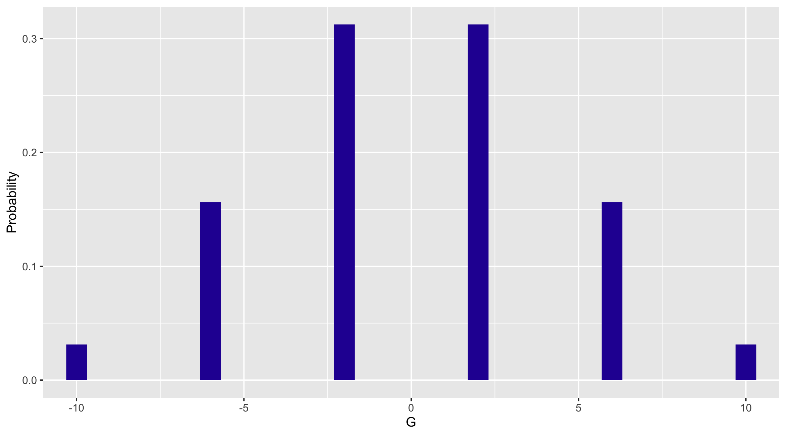
2 Probability Distributions
2.1 Introduction
The goal of this chapter is to introduce probability by covering several common probability distributions. A random variable is a number assigned to the outcome of a experiment where the outcome is not known in advance. In the case where the random variable can only assume a countable number of values, the associated probabilities can described by a discrete probability distribution. Section 2.2 introduces the construction of probabilities for a discrete random variable and introduces the Binomial and Negative Binomial distributions which are based on a coin-tossing experiment.
In the situation where the random variable takes on a continuum of values, probabilities are represented as areas under a density curve. Section 2.3 introduces continuous random variables by use of spinner and waiting time examples. This section introduces the Normal density which is a common function for representing a measurement random variable.
The following sections describe joint probability distributions for two random variables. Section 2.4 describes probability distributions for two discrete random variables and Section 2.5 describes the use of a density curve to represent probabilities for two continuous random variables. In this setting, Section 2.6 discusses how these joint probability distributions can be used to extract marginal probability distributions for a single variable. Section 2.7 describes the construction of probability distributions for one variable conditional on a value of the second variable.
2.2 Discrete Probability Distributions
2.2.1 A Simple Coin Game
Suppose that Peter and Paul play a simple coin game. A coin is tossed. If the coin lands heads, then Peter receives $2 from Paul; otherwise Peter has to pay $2 to Paul. The game is played for a total of five coin flips. After the five flips, what is Peter’s net gain (in dollars)?
This is an illustration of a random experiment where the outcome of the flips is unknown. For each possible outcome of the flips, say \(HTHHT\), there will be a corresponding net gain for Peter. For this outcome, Peter won three times and lost twice, so his net gain is \(3(2) - 2(2) = 2\) dollars. The net gain is an example of a random variable – a number assigned to each outcome of the random experiment. Generally, a capital letter will be used to represent a random variable – here the capital letter \(G\) denotes Peter’s gain in this experiment.
The next task is to assign probabilities for the values of the random variable. There are \(2 ^ 5 = 32\) possible outcomes of this experiment and since these outcomes are equally likely, we assign to each outcome a probability of 1/32. We can compute the probability of a value for \(G\) by counting the number of outcomes corresponding to that value and divide the number by 32. For example, the five outcomes where Peter’s net gain is \(G = 6\) are
HHHHT, HHHTH, HHTHH, HTHHH, THHHH
and so \(P(G = 6)\) is 5/32.
If we enumerate these 32 outcomes and calculate the associated net gain value for each outcome, we see there are 6 possible values of \(G\): -10, -6, -2, 2, 6, and 10 dollars. By counting the number of outcomes for each value of \(G\) and dividing the count by 32, we can compute the probability of all values. If we list the values of \(G\) together with the associated probabilities, we obtain a probability distribution for \(G\) as displayed in Table 2.1.
| Gain \(g\) (dollars) | Number of outcomes | \(P(G = g)\) |
|---|---|---|
| \(-10\) | 1 | 1/32 |
| \(-6\) | 5 | 5/32 |
| \(-2\) | 10 | 10/32 |
| 2 | 10 | 10/32 |
| 6 | 5 | 5/32 |
| 10 | 1 | 1/32 |
2.2.2 Discrete Random Variable
In general, \(X\) is a discrete random variable if it only assigns probability to a discrete set of values. The function \(f(x)\) is a probability mass function (pmf) for \(X\) if the function satisfies two properties.
- \(f(x) \ge 0\) for each possible value \(x\) of \(X\)
- \(\sum_x f(x) = 1\) (the probabilities sum to 1 over all values of \(X\))
A discrete probability distribution is a listing of the values of \(X\) together with the associated values of the pmf. We graphically displays this probability distribution with a bar graph. All of the values of \(G\) are placed on the horizontal axis, a probability scale is marked on the vertical scale, and then vertical lines are drawn on the graph corresponding to the pmf values. Figure 2.1 displays the graph of the probability distribution of \(G\) in this example.
2.2.3 Mean and Standard Deviation of a Discrete Random Variable
A probability distribution of a discrete random variable can be used to find probabilities of interest. For example, what is the probability Peter wins money in this game? Peter wins money if the gain \(G\) is positive and this corresponds to the values \(G = 2, 6, 10\). By adding up the probabilities of these three values, we see the probability that Peter wins money is
\[\begin{align*} P({ Peter \, \, wins}) &= P(G > 0) \\ &= P(G = 2) + P(G = 6) + P(G = 10) \\ &= \frac{10 + 5+1}{32} = \frac{1}{2}. \end{align*}\]
A common measure of “average” of a probability distribution is the mean or expected value of \(X\), denoted \(\mu\) or \(E(X)\). The mean (or expected value) is found by weighting each value of \(X\) by its associated probability and summing over all values of \(X\):
\[\begin{equation} \mu = \sum_x x f(x). \end{equation}\]
Two measures of spread of a random variable \(X\) are the variance, denoted by \(\sigma^2\), and the standard deviation denoted by \(\sigma\). To compute the variance, we weight the values of \((x - \mu)^2\) by the associated probabilities of \(X\) and find the sum of the products. \[\begin{equation} \sigma^2 = \Sigma_x (x - \mu)^2 f(x). \end{equation}\] The variance represents an “average” squared distance (or deviation) from the mean \(\mu\).
The standard deviation is the square root of the variance: \[\begin{align} \sigma & = \sqrt{\sigma^2} \nonumber \\ & = \sqrt{E(X - \mu)^2} \nonumber \\ & = \sqrt{\Sigma_x(x-\mu)^2f(x)} \end{align}\] The standard deviation is often more useful than the variance as \(\sigma\) is measured on the same scale as the random variable \(X\).
For the Peter-Paul game, the mean can be computed to be \[ \mu = -10 (1/32) -6 (5/32) -2 (10/32) + 2 (10/32) + 6 (5/32) + 10 (1/32) = 0. \]
Note that \(G = 0\) is not a possible outcome of the game – generally the mean of a random variable does not have to be a possible outcome value. But the mean or expected value has a long-run frequency interpretation. If Peter and Paul play this game a large number of times, then the value \(\mu\)= 0 represents the mean winnings of Peter in all of these games.
By use of Equation (2.2), the variance is given by
\[\begin{align*} \sigma^2 & = (-10 -0)^2 (1/32) + (-6 - 0)^2 (5/32) + (-2 - 0)^2 (10/32) + \\ & (2 - 0)^2 (10/32) + (6 - 0)^2 (5/32) + (10 - 0)^2 (1/32) = 20. \end{align*}\] and so the standard deviation is equal to \[ \sigma = \sqrt{20} = 4.47. \]
The value 4.417 represents an average or typical deviation of Peter’s gain (in dollars) from the mean value of 0. Since the value of the standard deviation is relatively large, this indicates that Peter’s actual gain in this game is uncertain, that is, there is much variability in Peter’s gain in repeated plays of the game.
2.2.4 Binomial Distribution
The Binomial distribution is one of the most commonly used distributions in Bayesian inference. It is often used as the data model for random experiments with two outcomes.
Consider the following random process called a Binomial experiment.
- The same basic task or trial is repeated many times – let the number of trials be denoted by \(n\).
- On each trial, there are two possible outcomes, which are called “success” or “failure”. Examples of such outcomes include “yes” or “no”, or “0” or “1”.
- The probability of a success, denoted by \(p\), is the same for each trial.
- The results of outcomes from different trials are independent. This means that the chance of a particular outcome does not depend on outcomes on previous trials.
We are generally interested in \(X\), the number of observed successes out of \(n\) trials in this experiment.. The probability of \(X = x\) successes is given by the Binomial formula: \[\begin{equation} P(X = x) = {{n} \choose {x}} p^x (1 - p)^{n-x}, \, \, k = x ..., n, \end{equation}\] where \({n \choose x}\) is the choose function \[\begin{equation} {n \choose x} = \frac{n!}{x! (n - x)!}. \end{equation}\]
Let’s illustrate using this formula for a familiar task of throwing a six-sided die. Suppose you roll a fair die five times and record the number of 4’s that are observed. This can be considered a Binomial experiment where the number of trials \(n = 5\) and the probability of success on a single trial is \(p = 1/6\). The random variable \(X\) is the number of rolls of 4 during this game.
Using Equation (2.4), the probability that we observe exactly two 4’s, that is \(P(X = 2)\) is equal to \[
P(X = 2) = {5 \choose 2} (1/6)^2 (1 - 1/6)^{5-2}.
\] This computation in R can be directly performed by use of the choose() function.
Code
choose(5, 2) * (1/6) ^ 2 * (1 - 1/6) ^ (5 - 2)[1] 0.160751Binomial probabilities can also be computed by use of the R function dbinom() that calculates the pmf of a Binomial distribution for values of the parameters \(n\) and \(p\). The inputs to dbinom() are the number of successes of interest \(x\) and the size \(n\) and prob \(p\).
Code
dbinom(2, size = 5, prob = 1 / 6)[1] 0.160751What is the probability that we roll at least one 4 in this experiment? This computation can be done by using the dbinom() function to find the probabilities of the values \(X\) = 1, 2, 3, 4, 5, and then using the sum() function to add up these individual probabilities.
Code
sum(dbinom(1:5, size = 5, prob = 1/6))[1] 0.5981224The chance of rolling at least one 4 in five rolls is 0.598.
The mean and variance of a Binomial random variable \(X\) are given by \[\begin{equation} E(X) = n p, \, \, \, Var(X) = n p (1-p). \end{equation}\]
In our dice rolling example where \(X\) denoted the number of 4’s in five rolls, the number of trials and probability of success are given by \(n\) = 5 and \(p\) = 1/6. The expected number of 4’s would be \[ E(X) = 5 (1/6) = 0.833 \] and the variance of the number of 4’s would be \[ Var(X) =5 (1/6) (1 - 1/6) = 25/36 = 0.694. \]
When the Binomial experiment is repeated many times, the mean and variance of \(X\) can be approximated by the sample mean and sample variance of the simulated draws of the random variable. In this example, we can simulate 5000 draws of five dice by use of the rbinom() function. The vector four_rolls contains the number of 4’s observed in these 5000 experiments. The mean() and var() functions are used to compute the sample mean and sample variance of these draws. Note that the values are close approximations to exact the values of \(E(X\)) and \(Var(X)\) from Equation (2.6).
Code
four_rolls <- rbinom(5000, size = 5, prob = 1/6)
c(M = mean(four_rolls), V = var(four_rolls)) M V
0.8432000 0.7091556 This is an illustration of an approximation by Monte Carlo simulation that will be seen in later chapters to be an important Bayesian computation tool.
Although the Binomial distribution is popular for representing experiments with two outcomes for its ease in probability computations, its use depends on the assumptions of a Binomial experiment. In cases where the probability of success is not constant across trials or where the trials are not independent, then alternative probability distributions should be used.
2.2.5 Negative Binomial Distribution
In a Binomial experiment, it is assumed that the number of trials is fixed. In alternative scenarios, we may be observing binary outcomes where the number of outcomes is actually random. To illustrate this situation, consider a baseball example featuring a famous Japanese hitter.
In the 2004 baseball season Ichiro Suzuki of the Seattle Mariners had the opportunity to break the record for the most hits in a single season. George Sisler’s record was 257 hits and Suzuki had 255 hits before the Mariners’ game on September 30. Was it likely that Suzuki would tie Sisler’s record during this particular game?
This process can be viewed as a coin-tossing experiment. When Suzuki comes to bat, there are two relevant outcomes: either he will get a hit, or he will get an out. Assume the probability that he gets a hit on a single at-bat is \(p\) = 0.372 (his current batting average) and the outcomes on different at-bats are independent. Suzuki needs two more hits to tie the record. How many outs will it take him to get two hits?
This is not a Binomial experiment since the number of trials is not fixed. Instead the number of successes is fixed in advance and the number of failures to achieve this is random. In this example, we are interested in probabilities about \(X\) = number of outs (failures) to get two hits (successes).
A general Negative Binomial experiment is described as follows:
- There is a sequence of independent trials where each trial can be a success or a failure.
- The probability of a success on a single trial is \(p\).
- The experiment is continued until we observe \(r\) successes, and \(X\) = number of observed failures.
The probability that it takes \(x\) failures to observe \(r\) successes, the pmf of \(X\), is given by \[\begin{equation} P(X = x) = {r + x -1 \choose r-1} p^r (1- p)^x, x = 0, 1, 2 ... \end{equation}\]
Let’s use R and this formula in our baseball example where \(r = 2\) and \(p\) = 0.372 and we wish to compute the probability \(X = 2\):
Code
r <- 2
p <- .372
choose(r + 2 -1, r - 1) * p ^ r * (1 - p) ^ 2[1] 0.1637293The R function dnbinom() provides Negative Binomial probabilities where the first argument is x, size is the value of \(r\) and prob is the value of \(p\). Using this function, the following table gives the probabilities for the number of outs values \(x\) = 0, 1, 2, …, 7.
Code
x <- 0:7
data.frame(x, prob = dnbinom(x, size = 2, prob = 0.372)) x prob
1 0 0.13838400
2 1 0.17381030
3 2 0.16372931
4 3 0.13709601
5 4 0.10762036
6 5 0.08110271
7 6 0.05942125
8 7 0.04264748Note that it is most likely that Suzuki will get one out to get his two additional hits, but the probability of one out is only 17%. There is a significant probability that Suzuki will take more outs. We use R to add the probabilities that \(X\) is at most 7:
Code
sum(dnbinom(0:7, size = 2, prob = 0.372))[1] 0.9038114We see that the probability that \(X\) is at most 7 is 0.904, so the probability that \(X\) exceeds 7 is \(1 - 0.904 = 0.096\).
For a Negative Binomial experiment where \(X\) is the number of failures needed to observe \(r\) successes, the mean and variance values are given by \[\begin{equation} E(X) = \frac{r (1 - p)}{p}, Var(X) = \frac{r (1 - p)}{p^2}. \end{equation}\] For the baseball example, \(r = 2\) and \(p = 0.372\), so the expected number of outs to get two hits would be \(E(X) = 2 (1 - 0.372) /0.372 = 3.4\). Note that although \(X = 1\) is the most probable value, Suzuki would average over 3 outs to get 2 hits in many repetitions of this random experiment.
Note that sometimes in a Negative Binomial experiment, the random variable is defined to be \(Y\), the number of trials to observe \(r\) successes. The formula for the probability distribution of \(Y\) differs from the one for \(X\), but we can perform probability calculations with either definition.
2.2.6 Poisson Distribution
Another discrete probability distribution useful in Bayesian settings is the Poisson distribution Let the random variable \(X\) denote the number of occurrences of an event in an interval with sample space \(\{0, 1, 2, \cdots \}\). The variable \(X\) follows a Poisson distribution with rate parameter \(\lambda\) when the pmf of observing \(x\) events in an interval is given by
\[\begin{eqnarray} f(X = x \mid \lambda) = e^{-\lambda}\frac{\lambda^x}{x!}, \, \, x = 0, 1, 2, ... \end{eqnarray}\] where \(\lambda\) is the average number of events per interval, \(e = 2.71828...\) is Euler’s number, and \(x!\) is the factorial of \(x\).
The Poisson sampling model is based on the following assumptions about the sampling process:
It is assumed that the time interval is fixed.
Counts of arrivals occurring during different time intervals are independent.
The rate \(\lambda\) at which the arrivals occur is constant over time.
To check the suitability of the Poisson distribution, we need to check these conditions for the particular application.
Consider am example where a hospital wants to determine how many doctors and nurses to assign on their emergency room (ER) team between 10pm and 11pm during the week. An important piece of information is the count of patients arriving in the ER in this one-hour period. For this example, the event is a patient’s arrival to the ER, and the fixed time interval is the period between 10pm and 11pm.
In this ER example it is reasonable to assume that the time of one patient’s arrival does not influence the time of another patient’s arrival. So it is assumed that events occur independently during different time intervals. In addition, we might not think that the rate of patient arrivals would change much through one hour during the evening, so it seems reasonable to assume that the average number of events is constant in the fixed interval.
Suppose that 20 patients on average arrive in the ER in the one-hour period, so we set \(\lambda = 20\). The random variable \(X\) is the number of patients arriving in the interval. What is the probability that exactly 15 patients arrive? We apply the Poisson pmf in Equation (2.9):
\[
P(X = 15) = e^{-20} \frac{20^{15}}{15!}
\] The R function dpois() computes Poisson probabilities where the first argument is x and the second argument lam is the value of \(\lambda\). So this probability is computed to be
Code
dpois(15, 20)[1] 0.05164885The R function ppois() will compute cumulative probabilities, that is probabilities of particular values or smaller. For example, suppose we are interested in the probability that 12 or fewer arrive in the time interval. This is equal to
Code
ppois(12, 20)[1] 0.03901199What is the probability that the number of arrivals falls between 12 and 22 inclusive? This is found by subtracting the probability of 11 or fewer from the probability of 22 or fewer.
Code
ppois(22, 20) - ppois(11, 20)[1] 0.6992245For a Poisson distribution with rate \(\lambda\), the mean and variance values are given by \[ E(X) = \lambda, \, Var(X) = \lambda. \] In our ER example, by the Poisson approximation, we can compute the standard deviation of the number of patients arriving: \[ \sigma = \sqrt{20} = 4.47. \]
2.3 Continuous Distributions
2.3.1 Introduction
Consider a spinner experiment where the location of the spinner \(X\) can be any value between 0 and 100. Let’s try spinning 10,000 times on a computer. One way to summarize the spinner values is to divide the range into bins and count the number of values in each bin. A histogram is a display of the table of bin counts. Figure 2.2 displays four histograms where the numbers of bins are equal to 5, 10, 20 and 50.
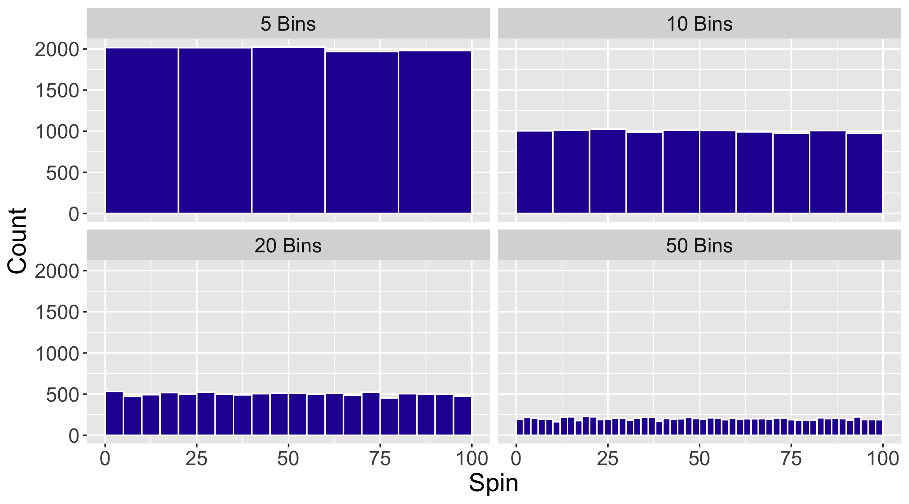
Although there is variation in the bar heights, the general shape of each histogram seems to be pretty flat or uniform over the entire interval of possible values of \(X\) between 0 and 100. If we are able to spin the spinner a large number of times and use a large number of bins, the shape of the bin heights would look close to the Uniform density shown in Figure 2.3.
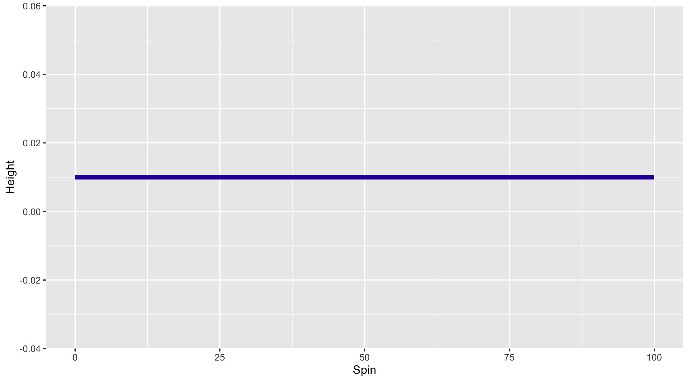
When the random variable \(X\) is continuous, such as the case of the spinner result here, then probabilities are represented by means of a smooth curve called a density curve. When \(X\) is continuous, then probabilities of intervals of \(X\) values are computed by areas under the density curve.
As a simple example, what is the chance that the spinner result falls between 0 and 100? Since the scale of the spinner is from 0 to 100, all spins must fall in this interval and the probability of \(X\) landing in (0, 100) is 1. This probability is represented by the total area under the horizontal line between 0 and 100. Since the area of this rectangle is given by height times base, and the base is equal to 100, the height of this density curve must be 1/100 = 0.01. In this case, the spinner result is said to have a Uniform distribution on the interval from 0 to 100, and the curve is a Uniform density on (0, 100).
By means of similar area computations, we find other probabilities about the spinner location \(X\).
- What is the probability the spin falls between 20 and 60? That is, what is \[ P(20 < X < 60)? \] This probability is equal to the shaded area under the Uniform density between 20 and 60. See Figure 2.4 Using again the formula for the area of a rectangle, the base is \(60 - 20 = 40\) and the height is 0.01, so \[ P(20 < X < 60) = 40 (0.01) = 0.4. \]
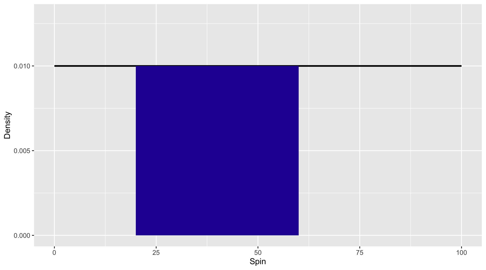
- What is the probability the spin is greater than 80? That is, what is \[P(X > 80)\] Figure 2.5 shows the area that needs to be computed to find this probability. Note that the area under the curve only between the values 80 and 100 is shaded, since \(X\) cannot be larger than 100. Again by finding the area of the shaded rectangle, we see that \(P(X > 80)\) = 20 (0.01) = 0.2.
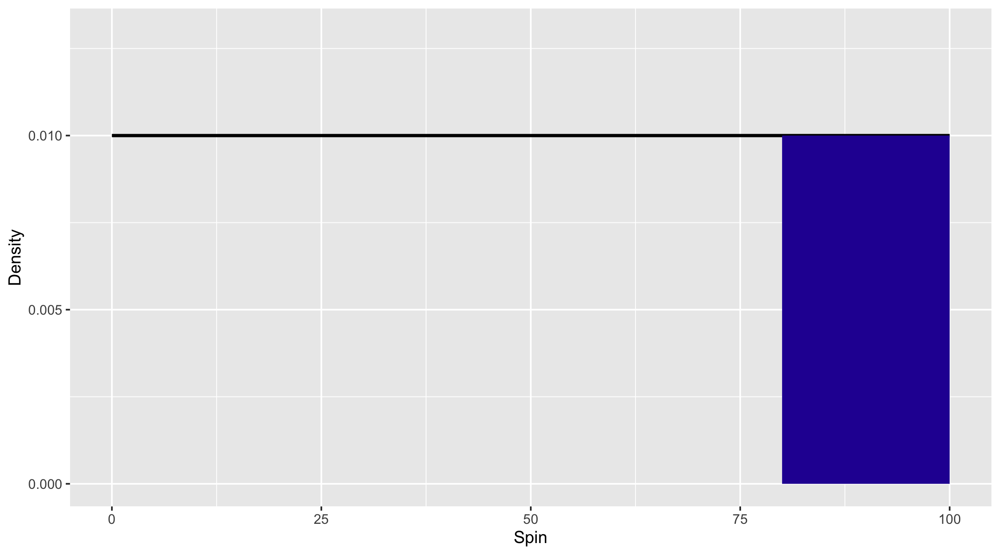
2.3.2 Probability Density Function
Consider a random experiment where a continuous random variable \(X\) is observed such as the location of the spinner in Section \(\ref{sec:Uniform}\). Define the support of \(X\) to be the set of possible values for \(X\). For example, the support of \(X\) for the spinner example is the interval (0, 100). To describe probabilities about \(X\), a probability density function (pdf) denoted by \(f(x)\) is defined. Any function \(f\) will not work – we require that \(f\) satisfy two properties:
Property 1. The probability density function \(f\) must be nonnegative which means that \[\begin{equation} f(x) \ge 0, { for\, all\,} x. \end{equation}\]
Property 2. The total area under the probability density density \(f\) must be equal to 1. Mathematically, \[\begin{equation} \int_{-\infty}^\infty f(x) dx = 1. \end{equation}\]
2.3.3 Waiting for a Bus
To illustrate a probability density function, suppose that a professor has a class that meets three times a week. To get to class, the professor walks to a bus stop and wait for a bus to go to school. From past experience, the professor knows that she can wait any time between 0 and 10 minutes for the bus, and she knows that each waiting time between 0 and 10 minutes is equally likely. For a given week, what’s the chance that her longest wait will be under 7 minutes?
Let \(W\) denote her longest waiting time for the week. In thinking about plausible values of \(W\), it is clear that \(W\) ranges between 0 and 10 minutes and large values of \(W\) are more likely. A probability density function for \(W\) that reflects these beliefs is given by \[ f(w) = \frac{3w^2}{1000}, 0 < w < 10. \] This pdf for this longest waiting time is shown in Figure 2.6.
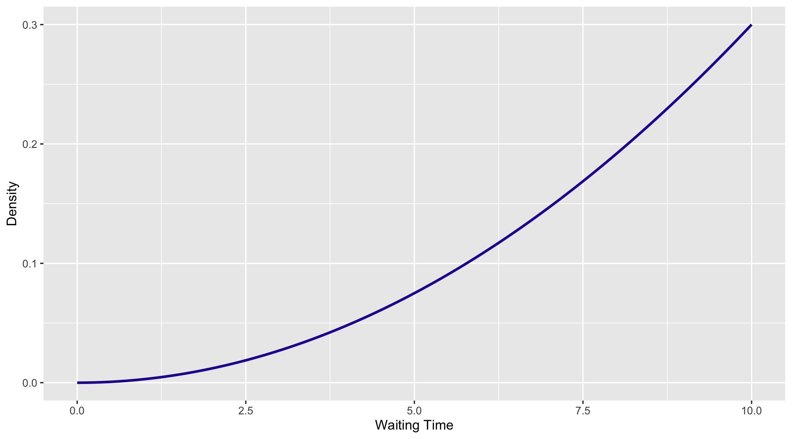
Before we go any further, we should check if this is indeed a legitimate probability density function:
- Note from the graph that the density does not take on negative values, so the first property is satisfied.
- Second, for it to be a probability density function, the entire area under the curve must be equal to 1. One can check this by finding the integral of the density between 0 and 10 (the region where the density if positive): \[ \int_0^{10} \frac{3w^2}{1000} dw = \frac{w^3}{1000}\Big|^{10}_0 = \frac{10^3}{1000} - \frac{0^3}{1000} = 1. \]
The entire area under the curve is indeed equal to 1, so \(f\) is a legitimate probability density function. Now that \(f\) is known to be a probability density function, we can use it to find probabilities. To find the probability that this longest waiting time is less than 7 minutes, \(P(W < 7)\), we wishe to compute the area under the density curve between 0 and 7, as shown in Figure 2.7.
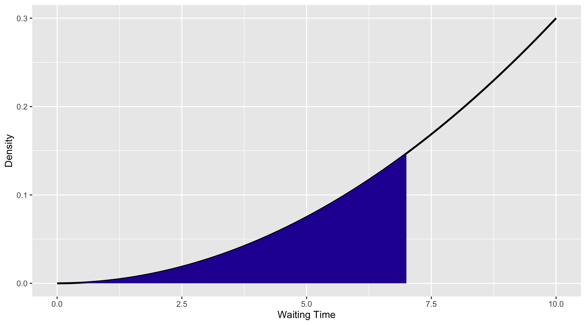
This is equivalent to the integral \[ P(0 < W < 7) = \int_0^{7} \frac{3w^2}{1000} dw \] and, by evaluating this, we obtain the probability \[ P(0 < W < 7) = \int_0^{7} \frac{3w^2}{1000} dw = \frac{w^3}{1000}\Big|^{7}_0 = \frac{7^3}{1000} - \frac{0^3}{1000} = 0.343. \]
Suppose we are interested in the probability that the longest waiting time is between 6 and 8 minutes. This is represented by the shaded area in Figure 2.8.
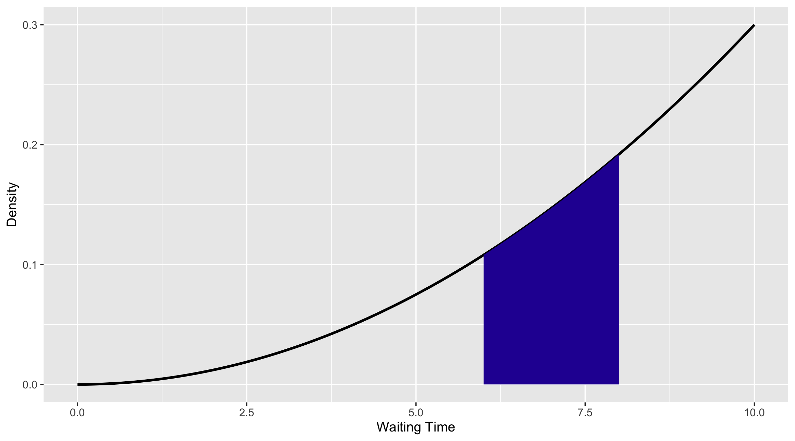
To compute this area, we find the integral of the density between 6 and 8: \[ P(6 < W < 8) = \int_6^{8} \frac{3w^2}{1000} dw = \frac{w^3}{1000}\Big|^{8}_6 = \frac{8^3}{1000} - \frac{6^3}{1000} = 0.296. \]
Since a continuous random variable assigns zero probability to single values, this probability is not changed if we include the endpoints of the interval:
\[ P(6 \le W \le 8) = P(6 < W < 8) = 0.296. \]
2.3.4 The Cumulative Distribution Function
Consider an arbitrary random variable \(X\) with pdf \(f(x)\). Choose an arbitrary point \(x\) – the cumulative distribution function at \(x\), or cdf for short, is the probability that \(X\) is less than or equal to \(x\): \[\begin{equation} F(x) = P(X \le x) = \int_{-\infty}^x f(x) dx. \end{equation}\]
Consider the random variable \(W\), the longest waiting time in the bus waiting example. Suppose we choose a value of \(x\) in the interval (0, 10). Then \(F(x)\) would be the area under the density curve between 0 and \(x\) shown in Figure 2.9.
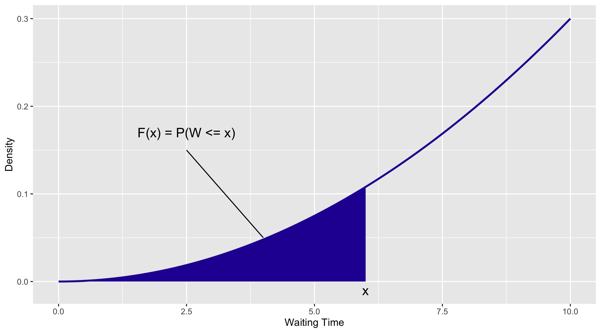
Writing this area as an integral, we compute \(F(x)\) as \[ F(x) = P(W \le x) = \int_0^x \frac{3w^2}{1000} dw = \frac{w^3}{1000}\Big|^{x}_0 = \frac{x^3}{1000}. \] This formula is valid for any value of \(x\) in the interval (0, 10).
In fact, \(F(x)\) is defined for all values of \(x\) on the real line.
If \(x\) is a value smaller or equal to 0, then we see from the figure that the probability that \(W\) is smaller than \(x\) is equal to 0. So \(F(x) = 0\) for \(x \le 0\).
On the other hand, if \(x\) is greater or equal to 10, then the probability that \(W\) is smaller than \(x\) is 1. So \(F(x) = 1\) for \(x \ge 10\).
Putting it all together, we see that the cdf \(F\) is given by \[ F(x) = \begin{cases} 0, & x \le 0 \\ x^3 / 1000, & 0 < x < 10 \\ 1, & x \ge 10. \end{cases} \]
Once we have computed the cdf \(F\), probabilities are found by evaluating \(F\) at different points. For example, to find the probability that the maximum waiting time \(W\) is less than equal to 6 minutes, we just compute \(F(6) = P(W \le 6) = 6^3 / 1000 = 0.216\). Figure 2.10 displays the cdf function and illustrates the computation.
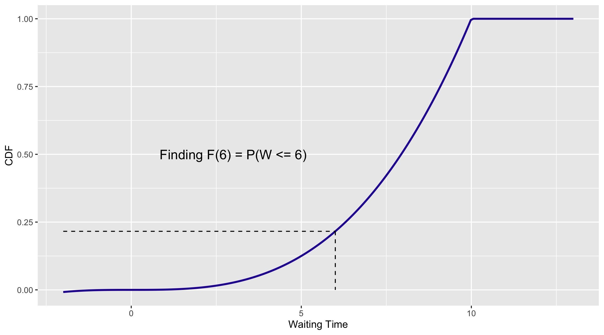
To compute the probability that the maximum waiting time exceeds 8 minutes, first note that “exceeding 8 minutes” is the complement event to “less than or equal to 8 minutes”, and so \[ P(W > 8) = 1 - P(W \le 8) = 1 - F(8) = 1 - \frac{8^3}{1000} = 0.488. \] Likewise, if we are interested in the chance that the waiting time \(W\) falls between 2 and 4, represent the probability as the difference of two “less-than” probabilities, and then subtract the two values of F. \[ P(2 < W < 4) = P(W \le 4) - P(W \le 2) = F(4) - F(2) = \frac{4^3}{1000} - \frac{2^3}{1000} = 0.056. \]
2.3.5 Mean, Standard Deviation and Percentile of a Continuous Random Variable
One is interested in summarizing a continuous random variable. Natural summaries are given by the mean \(\mu\) and the standard deviation \(\sigma\), where these quantities are defined in a similar manner as for a discrete random variable, with the exception that summations are replaced by integrals.
The mean \(\mu\), or equivalently the expected value of \(X\), is given by \[\begin{equation} \mu = E(X) = \int_{-\infty}^\infty x f(x) dx. \end{equation}\] Just as in the discrete random variable case, there is an attractive interpretation of \(\mu\). If we are able to observe a large number of values of \(X\), then \(\mu\) will be approximately equal to the sample mean \(\bar X\) of these random values of \(X\).
To define the spread of the values of \(X\), we first compute the average squared deviation about the mean, the variance, \[\begin{equation} \sigma^2 = Var(X) = E(X - \mu)^2 = \int_{-\infty}^\infty (x - \mu)^2 f(x) dx. \end{equation}\] The standard deviation of \(X\), \(\sigma\), is defined to be the square root of the variance.
Let’s illustrate the computation of the mean and standard deviation for the bus waiting time problem. Using the definition of \(f\), we get that the mean is equal to \[ \mu = \int_0^{10} x \left(\frac{3x^2}{1000}\right) dx. \] Performing the integration, we obtain \[ \mu = \int_0^{10} x \left(\frac{3x^2}{1000}\right) dx = \frac{3 x^4}{4000} \Big|^{10}_0 = \frac{3 (10)^4}{1000} = 7.5. \] On, the average, we expect the longest wait in a week to be 7.5 minutes.
The computation of the variance is a bit more tedious, but straightforward.
\[
\sigma^2 = \int_0^{10} (x -\mu)^2 \left(\frac{3x^2}{1000}\right) dx = 3.75.
\] So the standard deviation of \(X\) is \(\sigma = \sqrt{3.75} = 1.94\).
Another useful summary of a continuous random variable is a percentile. The 70th percentile, for example, is the value of \(X\), call it \(x\), such that 70% of the probability is to the left, shown in Figure 2.11. That is, the 70th percentile, call it \(x_{70}\), satisfies the equation \[ P(X \le x_{70}) = 0.70. \]
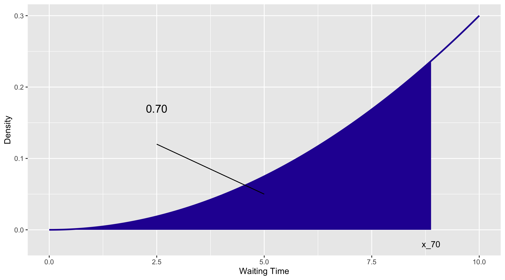
Since we recognize the left hand side of the equation as equivalent to the cdf \(F\) (which already has been computed as \(x^3/1000\)), the equation is written as \[ F(x_{70}) = 0.70, \] that is, \[ \frac{x_{70}^3}{1000} = 0.70. \] To find the 70th percentile, the above equation is solved for \(x_{70}\) – after some algebra, we get \[ x_{70} = \sqrt[3]{700} = 8.88. \] This means that if we wait many weeks for this bus, approximately 70% of the longest waiting times will be shorter than 8.88 minutes.
2.3.6 Normal Distribution
One of the most popular races in the United States is the marathon, a grueling 26-mile run. Here we explore completion times for 520 people running the marathon. A histogram of these times, measured in minutes, is shown in Figure 2.12. The vertical scale is density so the areas the bars correspond to relative frequencies of the different time intervals.
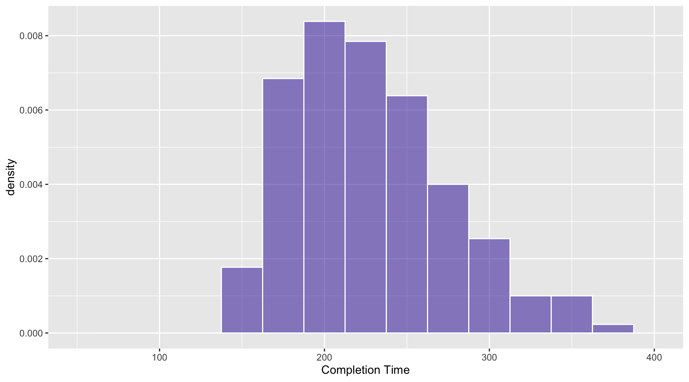
Note that these measured times have similar to a bell shape. Figure 2.13 superimposes a Normal curve on top of this histogram. Note that this curve is a reasonable match to the histogram. In fact, data like this marathon time data that are measurements are often well approximated by a Normal curve.
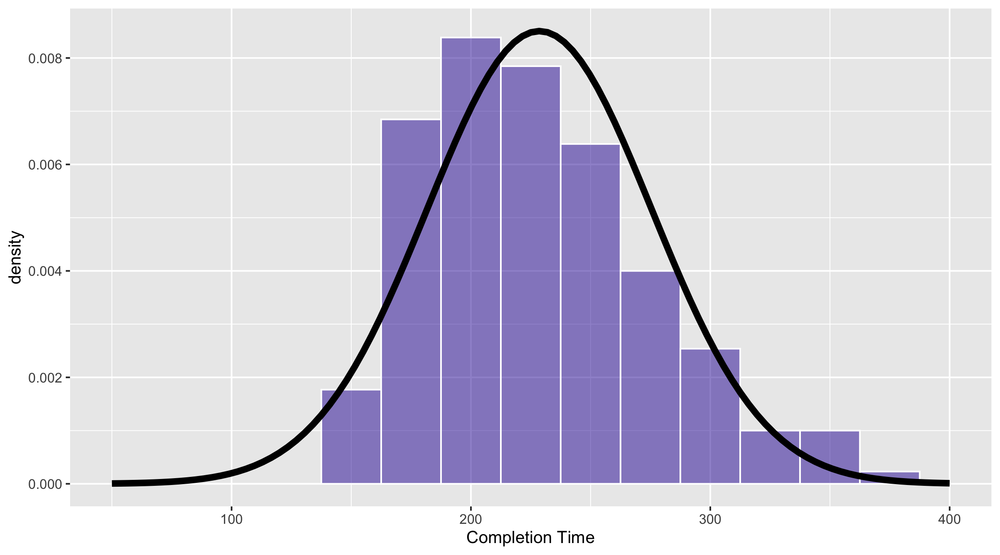
A Normal density curve has the general form \[\begin{equation} f(x) = \frac{1}{\sqrt{2 \pi} \sigma} \exp\left\{-\frac{(x - \mu)^2}{2 \sigma^2}\right\}, -\infty < x < \infty. \end{equation}\] This density curve is described by two parameters – the mean \(\mu\) and the standard deviation \(\sigma\). The mean \(\mu\) is the center of the curve. The mean of the Normal curve fit to the marathon time data is \(\mu\) = 229. The number \(\sigma\), the standard deviation, describes the spread of the curve. Here the Normal curve standard deviation is \(\sigma\) = 47. If we know the mean and standard deviation of the Normal curve, we can make reasonable predictions where the majority of times of the women runners will fall.
Suppose that the Normal density with \(\mu\) = 229 minutes and \(\sigma\)= 47 minutes represents the distribution of racing times. Say we are interested in the probability that a runner completes the race less than 4 hours or 240 minutes. One computes this probability by finding an area under the Normal curve. Specifically, as indicated in Figure 2.14, this probability is the area under the curve for all times less than 240 minutes.
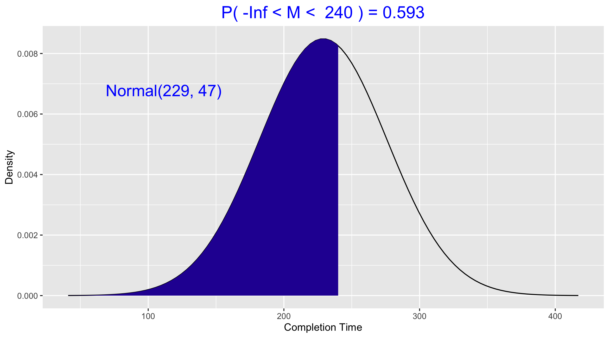
Normal Probability Calculations
One expresses this area as the integral \[ P(X \le 240) = \int_{-\infty}^{240} \frac{1}{\sqrt{2 \pi} \sigma} \exp\left\{-\frac{(x - \mu)^2}{2 \sigma^2}\right\} dx, \] but unfortunately we cannot integrate this function analytically (like was done for a Uniform density) to find the probability. Instead we find this area by use of the R function that gives values of the Normal cdf for any values of the mean and standard deviation. This function is used for the following three examples, illustrating the computation of three types of areas.
Returning to our example, recall the distribution of marathon times is approximately Normally distributed with mean \(\mu\) = 229 and standard deviation \(\sigma\) = 47.
- Finding a “less than” area. Suppose we are interested in the probability that a woman marathon runner completes the race in under 240 minutes.
That is, we wish to find \(P(X < 240)\) which is the area under the Normal curve to the left of 240. The function value gives the value of the cdf of a Normal random variable with mean \(\mu = m\) and \(\sigma = s\) evaluated at the value \(x\). For our example, the mean and standard deviation are given by 274 and 43, respectively, so the desired probability is given by
Code
pnorm(240, 229, 47)[1] 0.592524- Finding a “between two values” area. Suppose we are interested in computing the probability that a marathon runner completes a race between two values, such as \(P(230 < X < 280)\), shown in Figure 2.15.
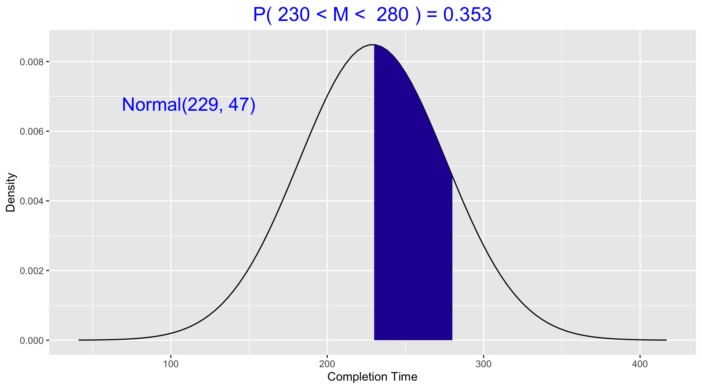
One writes this probability as the difference of two “less than” probabilities: \[\begin{align*} P(230 < X < 280) &= P(X < 280) - P(X < 230) \\ &= F(280) - F(230), \end{align*}\] where \(F(x)\) is the cdf of a Normal(274, 43) random variable evaluated at \(x\). Therefore, by use of the function, this probability is equal to
Code
pnorm(280, 229, 47) - pnorm(230, 229, 47)[1] 0.3525752- Finding a “greater than” area. Last, sometimes we will be interested in the probability that \(X\) is greater than some value, such as \(P(X > 300)\), the probability a runner takes more than 300 minutes to complete the race, shown in Figure 2.16.
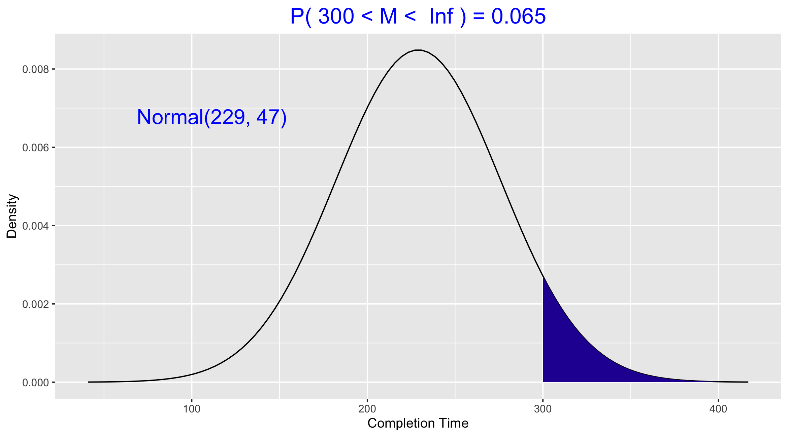
This probability is found by the complement property of probability, that \[\begin{align*} P(X > 300) &= 1 - P(X \le 300) \\ &= 1 - F(300). \end{align*}\] Therefore, we use the function to compute the probability that \(X\) is smaller than 300, and then subtract the answer from 1.
Code
1 - pnorm(300, 229, 47) [1] 0.06544032Computing Normal Percentiles
In the marathon completion times example, we were interested in computing a probability that was equivalent to finding an area under the Normal curve. A different problem is to compute a percentile of the distribution. In the marathon example, suppose that t-shirts will be given away to the runners who get the 25% fastest times. How fast does a runner need to run the race to get a t-shirt?
Here we wish to compute the 25th percentile of the distribution of times. This is a time, call it \(x_{25}\), such that 25 percent of all times are smaller than \(x_{25}\). This is shown graphically in Figure 2.17.
Equivalently, we wish to find the value \(x_{25}\) such that \[ P(X \le x_{25}) = F(x_{25}) = 0.25. \]
The R function qnorm(p, m, s) gives the percentile of a Normal random variable with mean \(\mu = m\) and \(\sigma = s\) corresponding to the probability \(p\). By typing
Code
qnorm(0.25, 229, 47)[1] 197.299we find the 25th percentile to be 197.299 minutes.
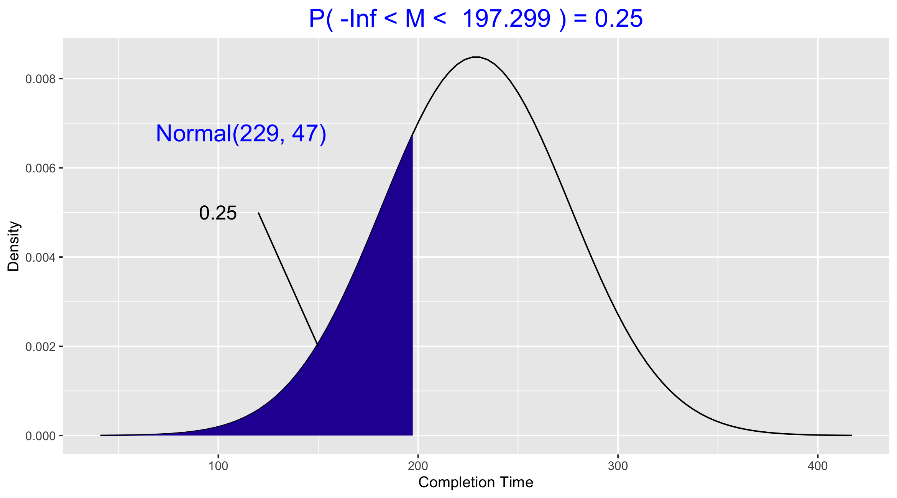
Suppose the runner needs to complete the race faster than 10% of the runners to be invited to run in the race the following year. How fast does she need to run? If we wish to have a 10% of the times to be larger than the runner’s time, this means that 90% of the times will be smaller than the runner’s time. That is, we wish to find the 90th percentile, \(x_{90}\) of the Normal distribution, shown in Figure 2.18.
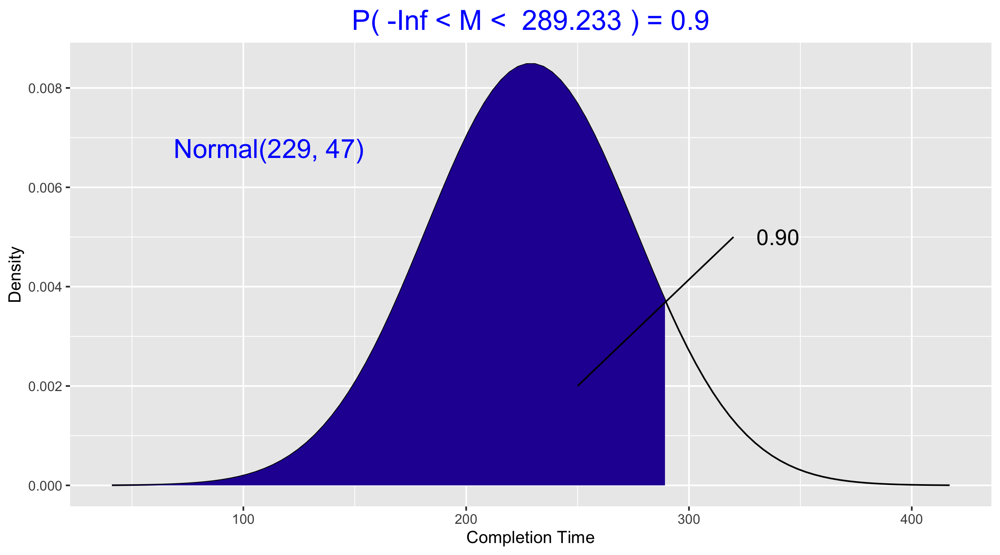
We compute the 90th percentile of a Normal(274, 43) curve:
Code
qnorm(0.90, 229, 47)[1] 289.2329So 289 minutes is the time to beat if the runner wishes to be invited to participate in next year’s race.
2.3.7 Binomial Probabilities and the Normal Curve
The Normal curve is useful for modeling batches of data, especially when we are collecting measurements of some process. But actually there is a more important justification for the Normal curve. We will explore several important results about the pattern of Binomial probabilities and sample means and we will find these results useful in our introduction to statistical inference in later chapters.
First, consider different shapes of Binomial distributions. Suppose that half of the student body lives on-campus and a sample survey of \(n\) students is conduct to learn if the study body is interested in using a new recreational sports complex that is proposed. Let \(X\) denote the number of on-campus students in the sample. Assuming a random sample is chosen, it is known that \(X\) will be distributed Binomial with parameters \(n\) and \(p=0.5\). What is the shape of the Binomial probabilities? Figure 2.19 displays the Binomial probabilities for sample sizes \(n\) = 10, 20, 50, and 100.
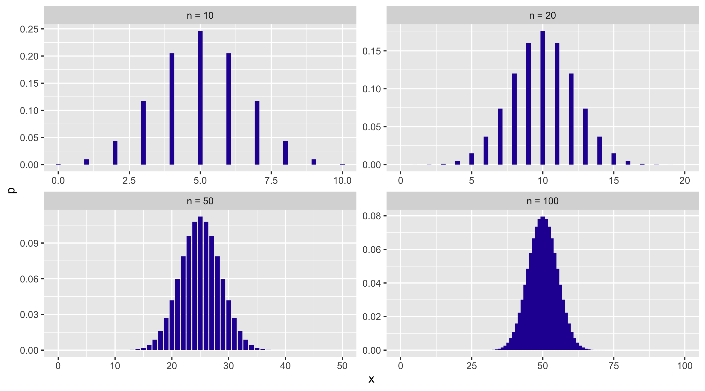
What does we notice about these probability graphs? First, note that each distribution is symmetric about the mean \(\mu = n p\). But more interesting, the shape of the distribution seems to resemble a Normal curve as the number of trials \(n\) increases.
Perhaps this pattern happens since we started with a Binomial distribution with \(p\) = 0.5 and we would not see this behavior if a different value of \(p\) was used. Suppose that only 10% of all students would use the new facility and let \(X\) denote the number of students in your sample who say they would use the facility. The random variable \(X\) would be distributed Binomial with parameters \(n\) and \(p\) = 0.1. Figure 2.20 shows the probability distributions again for the sample sizes \(n\) = 10, 20, 50, and 100. As we might expect the shape of the probabilities for \(n=10\) are not very Normal-shaped – the distribution is skewed right. But note that as \(n\) increases, the probabilities become more Normal-shaped and the Normal curve seems to be a good match for \(n=100\).
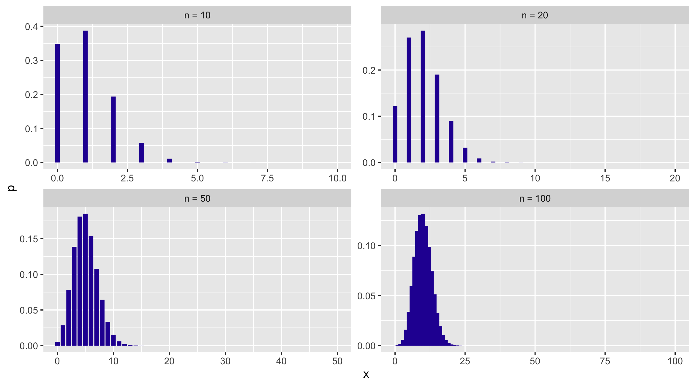
Figure 2.19 and Figure 2.20 illustrate a basic result: if we consider a Binomial random variable \(X\) with \(n\) trials and probability of success \(p\), then, as the number of trials \(n\) approaches infinity, the distribution of the standardized score \[\begin{equation} Z = \frac{X - n p}{\sqrt{n p (1 - p)}} \end{equation}\] approaches a standard Normal random variable, that is a Normal distribution with mean 0 and standard deviation 1. This is a very useful result. It means, that for a large number of trials, we can approximate a Binomial random variable \(X\) by a Normal random variable with mean and standard deviation \[\begin{equation} \mu = n p, \, \, \, \sigma = \sqrt{n p (1 - p)}. \end{equation}\]
This approximation result can be illustrated with our student survey example. Suppose that 10% of the student body would use the new recreational sports complex. One takes a random sample of 100 students — what’s the probability that 5 or fewer students in the sample would use the new facility?
The random variable \(X\) in this problem is the number of students in the sample that would use the facility. This random variable has a Binomial distribution with \(n = 100\) and \(p = 0.1\) that is pictured as a histogram in Figure 2.21. By the approximation result, this distribution is approximated by a Normal curve with \(\mu = 100 (0.1) = 10\) and \(\sigma = \sqrt{100 (0.1) (0.9)} = 3\) This Normal curve is placed on top of the probability histogram in Figure 2.21 – note that it is a pretty good fit to the histogram.
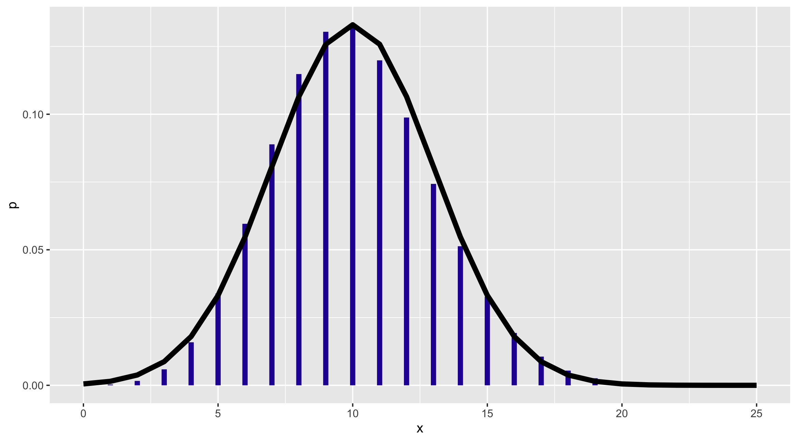
One is interested in the probability that at most 5 students use the facility, that is, \(P(X \le 5)\). This probability is approximated by the area under a Normal(10, 3) curve between \(X=0\) and \(X=5\). Using the R function, we compute this Normal curve area to be
Code
pnorm(5, 10, 3) - pnorm(0, 10, 3)[1] 0.04736129In this case, we can also find this probability exactly by a calculator or computer program that computes Binomial probabilities. Using the function in R, we find the probability that \(X\) is at most 5 is
Code
pbinom(5, size = 100, prob = 0.10)[1] 0.05757689Here we see that the Normal approximation gives a similar answer to the exact Binomial computation.
2.4 Joint Probability Mass Function
Up to this point, we have been considers experiments where only one random variable is observed. But certainly, it is common to collect several random variables in experiments. For example, in a running race, we may collect the identity and time for the winning runner. We want to extend our description of probabilities to situations when two variables are observed.
To begin the discussion of two random variables, we start with an example of balls in a box. Consider a box of ten balls – four are white, three are red, and three are black. Five balls are selected out of the box without replacement and the number of white and red balls in the sample are counted. What is the probability two white and two red balls are observed in the sample?
First, we think about the total number of ways of selecting five balls with replacement from a box of ten balls. One assumes the balls are distinct and the order that of the ball selection does not matter. Then the total number of outcomes is \[ N = {10 \choose 5} = 252. \]
Next, we think about the number of ways of selecting two white and two red balls. One does this in steps – first select the white balls, then select the red balls, and then select the one remaining black ball. Note that five balls are selected, so exactly one of the balls must be black. Since the box has four white balls, the number of ways of choose two white is \({4 \choose 2} = 6\). Of the three red balls, we want to choose two – the number of ways of doing that is \({3 \choose 2} = 3\). Last, the number of ways of choosing the remaining one black ball is \({3 \choose 1} = 3.\) So the total number of ways of choosing two white, two red, and one black ball is the product \[ {4 \choose 2} \times {3 \choose 2} \times {3 \choose 1} = 6 \times 3 \times 3 = 54. \]
Each one of the \({10 \choose 5} = 252\) possible outcomes of five balls is equally likely to be chosen. Of these outcomes, 54 resulted in two white and two red balls, so the probability of choosing two white and two red balls is \[ P({2 \, white \, and \, 2 \, red}) = \frac{54}{252}. \]
Here the probability of choosing a specific number of white and red balls has been found. To do this calculation for other outcomes, it is convenient to define two random variables
\(X\) = number of red balls selected, \(Y\) = number of white balls selected.
Based on what was found, \[ P(X = 2, Y = 2) = \frac{54}{252}. \]
Joint Probability Mass Function
Suppose this calculation is done for every possible pair of values of \(X\) and \(Y\). The table of probabilities is given in Table 2.2.
| \(Y\) = # of White | |||||
| \(X\) = # of Red | 0 | 1 | 2 | 3 | 4 |
| 0 | 0 | 0 | 6/252 | 12/252 | 3/252 |
| 1 | 0 | 12/252 | 54/252 | 36/252 | 3/252 |
| 2 | 3/252 | 36/252 | 54/252 | 12/252 | 0 |
| 3 | 3/252 | 12/252 | 6/252 | 0 | 0 |
This table is called the joint probability mass function (pmf) \(f(x, y)\) of (\(X, Y\)).
As for any probability distribution, we require that each of the probability values are nonnegative and the sum of the probabilities over all values of \(X\) and \(Y\) is one. That is, the function \(f(x, y)\) satisfies two properties:
- \(f(x, y) \ge 0\), for all \(x\), \(y\)
- \(\Sigma_{x, y} f(x, y) = 1\)
It is clear from Table 2.2 that all of the probabilities are nonnegative and the reader can confirm that the sum of the probabilities is equal to one.
Using Table 2.2, we see that some particular pairs \((x, y)\) are not possible as \(f(x, y) = 0\). For example, \(f(0, 1) = 0\) which means that it is not possible to observe 0 red balls and 1 white ball in the sample. Note that five balls were sampled, and if we only observed one red or white ball, that means that we must have sampled \(5 - 1 = 4\) black balls which is not possible.
We find probabilities of any event involving \(X\) and \(Y\) by summing probabilities from Table 2.2.
- What is\(P(X = Y)\), the probability that we sample the same number of red and white balls? By the table, we see that this is possible only when \(X = 1, Y = 1\) or \(X = 2, Y = 2\). So the probability \[ P(X = Y) = f(1, 1) + f(2, 2) = \frac{12}{252} + \frac{54}{252} = \frac{66}{252}. \]
- What is \(P(X > Y)\), the probability we sample more red balls than white balls? From the table, we identify the outcomes where \(X > Y\), and then sum the corresponding probabilities. \[\begin{align*} P(X > Y) & = f(1, 0) + f(2, 0) + f(2, 1) + f(3, 0) + f(3, 1) + f(3, 2) \\ & = \frac{12}{252} + \frac{3}{252} + \frac{36}{252} + \frac{3}{252} + \frac{12}{252} + \frac{6}{252} \\ & = \frac{72}{252} \end{align*}\]
Simulating Sampling from a Box
The variable is a vector containing the colors of the ten balls in the box. The function simulates drawing five balls from the box and computing the number of red balls and number of white balls.
Code
box <- c("white", "white", "white", "white",
"red", "red", "red",
"black", "black", "black")
one_rep <- function(){
balls <- sample(box, size = 5, replace = FALSE)
X <- sum(balls == "red")
Y <- sum(balls == "white")
c(X, Y)
}Using the replicate() function, we simulate this sampling process 1000 times, storing the outcomes in the data frame results with variable names X and Y. Using the table() function, we classify all outcomes with respect to the two variables. By dividing the observed counts by the number of simulations, we obtain approximate probabilities similar to the exact probabilities shown in Table 2.2.
Code
results <- data.frame(t(replicate(1000, one_rep())))
names(results) <- c("X", "Y")
table(results$X, results$Y) / 1000
0 1 2 3 4
0 0.000 0.000 0.028 0.050 0.013
1 0.000 0.051 0.214 0.127 0.010
2 0.012 0.138 0.217 0.049 0.000
3 0.012 0.063 0.016 0.000 0.0002.5 Joint Probability Density Functions
One can also describe probabilities when the two variables \(X\) and \(Y\) are continuous. As a simple example, suppose that we randomly choose two points \(X\) and \(Y\) on the interval (0, 2) where \(X < Y\). One defines the joint probability density function or joint pdf of \(X\) and \(Y\) to be the function \[ f(x, y) = \begin{cases} \frac{1}{2}, \, \, 0 < x < y <2;\\ 0, \, \,{elsewhere}. \end{cases} \]
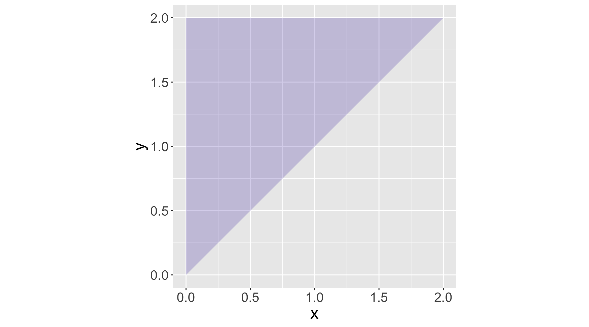
This joint pdf is viewed as a plane of constant height over the set of points \((x, y)\) where \(0 < x < y <2\). This region of points in the plane is shown in Figure 2.22.
In the one variable situation in Section 2.3, a function \(f\) is a legitimate density function or pdf if it is nonnegative over the real line and the total area under the curve is equal to one. Similarly for two variables, any function \(f(x, y)\) is considered a pdf if it satisfies two properties:
- The density is nonnegative over the whole plane: \[\begin{equation} f(x, y) \ge 0, \, \, {for} \, {all} \, \, x, y. \end{equation}\]
- The total volume under the density is equal to one: \[\begin{equation} \int \int f(x, y) dx dy = 1. \end{equation}\]
The density in our example is indeed a legitimate joint pdf. It is pretty obvious that the density that was defined is nonnegative, but it is less clear that the integral of the density is equal to one. Since the density is a plane of constant height, we compute this double integral geometrically. Using the familiar ``one half base times height” argument, the area of the triangle in the plane is \((1/2) (2) (2) = 2\) and since the pdf has constant height of \(1/2\), the volume under the surface is equal to \(2 (1/2) =1\). One can also compute the double integral as follows to confirm that the total volume is equal to one. \[\begin{align*} \int_{0}^2 \int^y_{3-y} f(x, y) dx dy & = \int_{0}^2 \int^y_{3-y} \frac{1}{2} dx dy \\ & = \int_{0}^2 \frac{2 y - 3}{2}dy \\ & = \frac{y^2 - 3 y}{ 2} \Big|_{0}^2 \\ & = \frac{2^3 - 3 (2)}{2} = 1. \end{align*}\]
Probabilities about \(X\) and \(Y\) are found by finding volumes under the pdf surface. For example, suppose we wish to find the probability that the sum of locations \(X + Y > 3\), that is \(P(X + Y > 3)\). The region in the \((x, y)\) plane of interest is first identified, and then we find the volume under the joint pdf over this region.
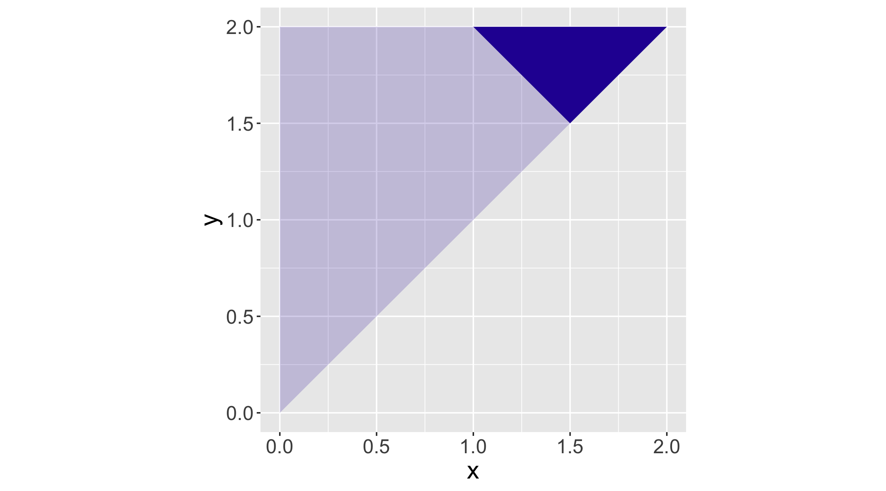
In Figure 2.23, the region where \(x + y > 3\) has been shaded. The probability \(P(X + Y > 3)\) is the volume under the joint pdf over this region. Applying a geometric argument, we note that the area of the shaded region is \(1/4\), and so the probability of interest is \((1/4)(1/2) = 1/8\). One also finds this probability by integrating the joint pdf over the region as follows: \[\begin{align*} P(X + Y < 3) & = \int_{1.5}^2 \int^y_{3-y} f(x, y) dx dy \\ & = \int_{1.5}^2 \int^y_{3-y} \frac{1}{2} dx dy \\ & = \int_{1.5}^2 \frac{2 y - 3}{2}dy \\ & = \frac{y^2 - 3 y}{ 2} \Big|_{1.5}^2 \\ & = \frac{1}{8}. \end{align*}\]
2.6 Marginal Probability Functions
2.6.1 Discrete Random Variables
Once a joint probability mass function for \((X, Y)\) has been constructed, we find probabilities for one of the two variables. In our balls-in-box example in Section 2.4, suppose we want to find the probability that exactly three red balls are chosen, that is \(P(X = 3)\). This probability is found by summing values of the joint pmf \(f(x, y)\) where \(x = 3\) and \(y\) can be any possible value of the random variable \(Y\), that is, \[\begin{align*} P(X = 3) & = \sum_y f(3, y) \\ & = f(3, 0) + f(3, 1) + f(3, 2) \\ & = \frac{3}{252} + \frac{12}{252} + \frac{6}{252} \\ & = \frac{21}{252}. \end{align*}\]
This operation is done for each of the possible values of \(X\) – the marginal probability mass function of \(X\), \(f_X()\) is defined as follows: \[\begin{equation} f_X(x) = \sum_y f(x, y). \end{equation}\] One finds this marginal pmf of \(X\) from Table 2.2 by summing the joint probabilities for each row of the table. The marginal pmf of \(X\) is displayed in Table 2.3.
| \(x\) | \(f_X(x)\) |
|---|---|
| 0 | 21/252 |
| 1 | 105/252 |
| 2 | 105/252 |
| 3 | 21/252 |
Note that a marginal pmf is a legitimate probability function in that the values are nonnegative and the probabilities sum to one.
We can also find the marginal pmf of \(Y\), denoted by \(f_Y()\), by a similar operation – for a fixed value of \(Y = y\) we sum over all of the possible values of \(X\). \[\begin{equation} f_Y(y) = \sum_x f(x, y). \end{equation}\]
For example, if we want to find \(f_Y(2) = P(Y = 2)\) in our example, we sum the joint probabilities in Table 2.2 over the rows in the column where \(Y = 2\). One obtains the probability: \[\begin{align*} f_Y(2) & = \sum_x f(x, 2) \\ & = f(0, 2) + f(1, 2) + f(2, 2) + f(3, 2)\\ & = \frac{6}{252} + \frac{54}{252} + \frac{54}{252} + \frac{6}{252}\\ & = \frac{120}{252}. \end{align*}\] By repeating this exercise for each value of \(Y\), we obtain the marginal pmf of \(Y\) displayed in Table 2.4.
| \(y\) | \(f_Y(y)\) |
|---|---|
| 0 | 6/252 |
| 1 | 60/252 |
| 2 | 120/252 |
| 3 | 60/252 |
| 4 | 6/252 |
2.6.2 Continuous Random Variables
Given a joint pdf \(f(x, y)\) that describes probabilities of two continuous variables \(X\) and \(Y\), we summarize probabilities about each variable individually by the computation of marginal pdfs. The marginal pdf of \(X\), \(f_X(x)\), is obtained by integrating out \(y\) from the joint pdf. \[\begin{equation} f_X(x) = \int f(x, y) dy. \end{equation}\] In a similar fashion, we define the marginal pdf of \(Y\) by integrating out \(x\) from the joint pdf. \[\begin{equation} f_Y(x) = \int f(x, y) dx. \end{equation}\]
Let’s illustrate the computation of marginal pdfs for the example of Section 2.5. One has to be careful about the limits of the integration due to the dependence between \(x\) and \(y\) in the support of the joint density. Looking back at Figure 2.22, we see that if the value of \(x\) is fixed, then the limits for \(y\) go from \(x\) to 2. So the marginal density of \(X\) is given by \[\begin{align*} f_X(x) & = \int f(x, y) dy \\ & = \int_x^2 \frac{1}{2} dy \\ & = \frac{2 - x}{2}, \, \, 0 < x < 2. \end{align*}\] By a similar calculation, we can verify that the marginal density of \(Y\) is equal to \[ f_Y(y) = \frac{y}{2}, \, \, 0 < y < 2. \]
2.7 Conditional Probability Functions
2.7.1 Discrete Random Variables
In the sampling balls from a box example from Section 2.4 and Section 2.6.1 , suppose we are told that exactly two red balls are sampled, that is \(X\) = 2 – how does that information change the probabilities about the number of white balls \(Y\)?
In this example, we are interested in finding \(P(Y = y \mid X = 2)\). Using the definition of conditional probability, we have \[\begin{align*} P(Y = y \mid X = 2) & = \frac{P(Y = y, X = 2)}{P(X = 2)}. \\ & = \frac{f(2, y)}{f_X(2)} \end{align*}\] For example, the probability of observing two white balls given that we have two red balls is equal to \[\begin{align*} P(Y = 2 \mid X = 2) & = \frac{P(Y = 2, X = 2)}{P(X = 2)} \\ & = \frac{f(2, 2)}{f_X(2)} \\ & = \frac{54 / 252}{105/252} = \frac{54}{105}. \\ \end{align*}\]
Suppose this calculation is repeated for all possible values of \(Y\) – we obtain the values displayed in Table 2.5.
| \(y\) | \(f_{Y \mid X}(y \mid X = 2)\) |
|---|---|
| 0 | 3/105 |
| 1 | 36/105 |
| 2 | 54/105 |
| 3 | 12/105 |
These probabilities represent the conditional probability mass function for \(Y\) conditional on \(X = 2\). This conditional pmf is just like any other probability distribution in that the values are nonnegative and they sum to one. To illustrate using this distribution, suppose we are told that two red balls are selected (that is, \(X = 2\)) and we want to find the probability that more than one white ball is chosen. This probability is given by \[\begin{align*} P(Y > 1 \mid X = 2) & = \Sigma_{y >1} \, \, f_{Y \mid X}(y \mid X = 2) \\ & = f_{Y \mid X}(2 \mid X = 2) + f_{Y \mid X}(3 \mid X = 2) \\ & = \frac{54}{105} + \frac{12}{105} = \frac{66}{105}. \end{align*}\]
In general, the conditional pmf of \(Y\) conditional on \(X = x\), denoted by \(f_{Y\mid X}(y \mid x)\), is defined to be \[\begin{equation} f_{Y \mid X}(y \mid x) = \frac{f(x, y)}{f_X(x)}, \, \, { if} \, \, f_X(x) > 0. \end{equation}\]
2.7.2 Continuous Random Variables
One can also define conditional probability densities in the continuous random variable. Returning to our choose two points example in Section 2.5 and 2.6.2, suppose we are told that the first random location is equal to \(X = 1.5\). What have we learned about the value of the second random variable \(Y\)?
To answer this question, we define the notion of a conditional pdf. The conditional pdf of the random variable \(Y\) given the value \(X = x\) is defined as the quotient \[\begin{equation} f_{Y \mid X}(y \mid X = x) = \frac{f(x, y)}{f_X(x)}, \, \, { if} \, \, f_X(x) > 0. \end{equation}\] In our example we are given that \(X = 1.5\). Looking at Figure 2.22, we see that when \(X = 1.5\), the only possible values of \(Y\) are between 1.5 and 2. By substituting the values of \(f(x, y)\) and \(f_X(x)\), we obtain \[\begin{align*} f_{Y \mid X}(y \mid X = 1.5) & = \frac{f(1.5, y)}{f_X(1.5)} \\ & = \frac{1/2}{(2 - 1.5) / 2} \\ & = 2, \, \, 1.5 < y < 2. \\ \end{align*}\] In other words, the conditional density for \(Y\) when \(X = 1.5\) is uniform from 1.5 to 2.
A conditional pdf is a legitimate density function, so the integral of the conditional pdf of \(Y\) given a value of \(X\) over all values \(y\) is equal to one. We can use this density to compute conditional probabilities. For example, if \(X\) = 1.5, what is the probability that \(Y\) is greater than 1.7? This probability is the conditional probability \(P(Y > 1.7 \mid X = 1.5)\) that is equal to an integral over the conditional density \(f_{Y \mid X}(y \mid 1.5)\): \[\begin{align*} P(Y > 1.7 \mid X = 1.5) & = \int_{1.7}^2 f_{Y \mid X}(y \mid 1.5) dy \\ & = \int_{1.7}^2 2 dy \\ & = 0.6. \\ \end{align*}\]
Turn the Random Variables Around
Above, we looked at the pdf of \(Y\) conditional on a value of \(X\). One can also consider a pdf of \(X\) conditional on a value of \(Y\). Returning to our example, suppose that we learn that \(Y\), the larger random variable on the interval is equal to 0.8. In this case, what would we expect for the random variable \(X\)?
This question can be answered in two steps – we first find the conditional pdf of \(X\) conditional on \(Y = 0.8\). Then once this conditional pdf is found, we find the mean of this distribution.
The conditional pdf of \(X\) given the value \(Y = y\) is defined as the quotient \[\begin{equation} f_{X \mid Y}(x \mid Y = y) = \frac{f(x, y)}{f_Y(y)}, \, \, { if} \, \, f_Y(y) > 0. \end{equation}\] Looking back at Figure 2.22, we see that if \(Y = 0.8\), the possible values of \(X\) are from 0 to 0.8. Over these values the conditional pdf of \(X\) is given by \[\begin{align*} f_{X \mid Y}(x \mid Y = 0.8) & = \frac{f(x, 0.8)}{f_Y(0.8)} \\ & = \frac{1/2}{0.8 / 2} \\ & = 1.25, \, \, 0 < x < 0.8. \\ \end{align*}\] So if we know that \(Y = 0.8\), then the conditional pdf for \(X\) is Uniform on (0, 0.8).
To find the expected value of \(X\) knowing that \(Y = 0.8\), we find the mean of this distribution. \[\begin{align*} E(X \mid Y = 0.8) & = \int_0^{0.8} x f_{X \mid Y}(x \mid 0.8) dx \\ & = \int_0^{0.8} x \,1.25 \, dx \\ \\ & = (0.8)^2 / 2 \times 1.25 = 0.4. \\ \end{align*}\]
2.8 Exercises
- Coin-tossing Game
In the Peter-Paul coin-tossing game described in the text, let the random variable \(X\) be the number of times Peter is in the lead. For example, if the coin tosses are \(HTHHT\), Peter’s running winnings are $2, 0, $2, $4, $2, and the number of times he is in the lead is \(X = 4\).
| (HHHHH) | (HTHHH) | (THHHH) | (TTHHH) |
| (HHHHT) | (HTHHT) | (THHHT) | (TTHHT) |
| (HHHTH) | (HTHTH) | (THHTH) | (TTHTH) |
| (HHHTT) | (HTHTT) | (THHTT) | (TTHTT) |
| (HHTHH) | (HTTHH) | (THTHH) | (TTTHH) |
| (HHTHT) | (HTTHT) | (THTHT) | (TTTHT) |
| (HHTTH) | (HTTTH) | (THTTH) | (TTTTH) |
| (HHTTT) | (HTTTT) | (THTTT) | (TTTTT) |
- Find the probability distribution for \(X\).
- Construct a graph of the pmf for \(X\).
- What is the most likely value of \(X\)?
- Find the probability that \(X > 2\).
- Sampling Without Replacement
Suppose you choose two coins from a box with two nickels and three quarters. Let \(X\) denote the number of nickels you draw.
- Write out all possible 10 outcomes of this experiment.
- Find the probability distribution for \(X\).
- What is the most likely value of \(X\)?
- Find the probability that \(X > 1\).
- Shooting Free Throws
Suppose you watch your favorite basketball player attempt five free throw shots during a game. You know that the chance that he is successful on a single shot is 0.5, so that the possible sequences of successes (\(S\)) and misses (\(M\)) shown below are equally likely. Suppose you measure the number of runs \(X\) where a run is defined to be a streak of \(S\)’s or \(M\)’s. For example, in the sequence \(MMSSM\), there are three runs (one run of two misses, one run of two successes, and one run of one miss).
| (SSSSS) | (SMSSS) | (MSSSS) | (MMSSS) |
| (SSSSM) | (SMSSM) | (MSSSM) | (MMSSM) |
| (SSSMS) | (SMSMS) | (MSSMS) | (MMSMS) |
| (SSSMM) | (SMSMM) | (MSSMM) | (MMSMM) |
| (SSMSS) | (SMMSS) | (MSMSS) | (MMMSS) |
| (SSMSM) | (SMMSM) | (MSMSM) | (MMMSM) |
| (SSMMS) | (SMMMS) | (MSMMS) | (MMMMS) |
| (SSMMM) | (SMMMM) | (MSMMM) | (MMMMM) |
- Find the probability distribution for \(X\).
- Construct a graph of the pmf for \(X\).
- What is the most likely number of runs in the sequence?
- Find the probability that you have at most 2 runs in the sequence.
- Rolling Two Dice
Suppose you roll two dice and you keep track of the larger of the two rolls which we denote by \(X\). For example, if you roll a 4 and a 5, then \(X\) = 5.
- Find the probability distribution for \(X\).
- Construct a graph of the pmf for \(X\).
- What is the most likely value of \(X\)?
- Find the probability that \(X\) is either 5 or 6.
- Spinning a Spinner
Let \(X\) denote the number you get when you spin the spinner shown below.
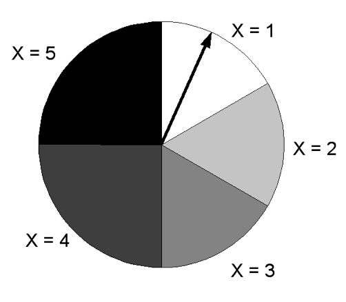
- Find the probability distribution for \(X\).
- Find the probability that \(X \ge 2\) .
- Find the mean and standard deviation of \(X\).
- Rolling Four Dice
Suppose you are asked to roll four dice and record the sum \(X\). A lazy student thinks this is too much work. As a shortcut, he decides to roll only two dice, record the sum of the dice, and then double the result – call this random variable \(Y\).
The probability distributions of \(X\) and \(Y\) are shown in Tables \(\ref{tab:X}\) and \(\ref{tab:Y}\). The distribution of \(X\) was obtained by simulating the rolls of four dice for one million trials.
Table 4.12. Probability distribution for \(X\).
| (x) | (P(X = x)) | (x) | (P(X = x)) |
|---|---|---|---|
| 4 | 0.001 | 15 | 0.108 |
| 5 | 0.003 | 16 | 0.096 |
| 6 | 0.008 | 17 | 0.080 |
| 7 | 0.016 | 18 | 0.062 |
| 8 | 0.027 | 19 | 0.043 |
| 9 | 0.044 | 20 | 0.027 |
| 10 | 0.062 | 21 | 0.015 |
| 11 | 0.080 | 22 | 0.008 |
| 12 | 0.097 | 23 | 0.003 |
| 13 | 0.108 | 24 | 0.001 |
| 14 | 0.113 |
Table 4.13. Probability distribution for \(Y\).
| (y) | (P(Y = y)) | (y) | (P(Y = y)) |
|---|---|---|---|
| 4 | 0.028 | 16 | 0.139 |
| 6 | 0.056 | 18 | 0.111 |
| 8 | 0.083 | 20 | 0.083 |
| 10 | 0.111 | 22 | 0.056 |
| 12 | 0.139 | 24 | 0.028 |
| 14 | 0.167 |
- Compute the mean and standard deviation of the probability distributions of \(X\) and \(Y\).
- Plot the probability distributions of \(X\) and \(Y\) on the same graph.
- Compare and contrast the two probability distributions. How are the distributions similar? How are they different? How would you respond to the lazy student who thinks that doubling a two-dice result is equivalent to finding the sum of four fair dice?
- Running a Marathon Race
Suppose three runners from college \(A\) and four runners from college \(B\) are participating in a marathon race. Suppose that all seven runners have equal abilities and so all possible orders of finish of the seven runners are equally likely. For example, one possible order of finish is \(AAABBBB\) where the three \(A\) runners finish first, second, and third. Let \(X\) denote the finish position of the best runner from college \(A\).
- Find the probability distribution of \(X\).
- Find the probability that \(X\) is at most 2.
- Find the average finish of the best runner from college \(A\).
- Choosing a Slip from a Random Box
Box 1 contains four slips numbered 1 through 4 and Box 2 contains five slips numbered 2 through 6. Suppose you roll a die. If the die roll is 1 or 2, you choose a slip from box 1; otherwise you choose a slip from box 2. Let \(Y\) denote the number on the slip.
- Find the probability distribution for \(Y\).
- Find the probability that \(Y\) is between 2 to 4.
- A Random Walk
Suppose that a person starts at location 0 on the number line and each minute he is equally likely to take a step to the left and to the right. Let \(Y\) denote the person’s location after four steps.
- Find the probability distribution for \(Y\).
- Find the probability that he is at least two steps away from his start after four steps.
- Suppose there is some gravitational pull towards the 0 (home) location. Then if he is currently at a negative location, the probability he will take a positive step is 0.7, and likewise if he is at a positive location, the probability he takes a negative step is 0.7. If he is at point 0, he is equally likely to take a negative or positive step. Find the probability distribution of \(Y\).
- Compare the two probability distributions in parts (a) and (c) using the mean and standard deviation.
- Selecting a Prize from a Bag
Suppose you select a prize (with replacement) from a bag that contains three prizes – one worth $1, one worth $5, and one worth $10. You have three opportunities to select a prize and you get to keep the largest prize of the three you select. Let \(X\) denote the value of the prize you keep.
- Find the probability distribution of \(X\).
- Find the probability you win more than $1.
- Find your expected winning.
- Playing Roulette
Suppose you place a single $5 bet on three numbers (the Trio Bet) in roulette that has a payoff odds of 11 to 1. Let \(X\) denote your payoff. Recall that if you win you receive 11 times your betting amount plus your $5 bet; if you lose, your payoff is nothing.
- Find the probability distribution for \(X\).
- Find the mean of \(X\). On average, how much money do you lose in a single $5 bet?
- Consider placing $5 instead on a Five Number Bet that pays at 6 to 1. Find the probability distribution for the payoff \(Y\) for this bet. Compute the mean of \(Y\). How does this average payoff compare with the average payoff for the Trio Bet?
- Find the standard deviation of the payoffs for \(X\) and \(Y\). Which bet has the larger standard deviation? Interpret what it means to have a large standard deviation.
- Sum of Independent Random Variables
Suppose you have \(k\) random variables \(X_1, ..., X_k\). Each random variable has a mean \(\mu\) and a standard deviation \(\sigma\). Suppose the random variables are independent – this means that the probability that one variable, say takes a value will not be affected by the values of the other random variables. In this case, it can be shown that the mean and standard deviation of the sum \(S = X_1 + ... + X_k\) will have mean \(E(S)= k \mu\) and standard deviation \(SD(S)= \sqrt{k} \sigma\).
It has been shown that if \(X\) denotes the roll of a single die, then the mean and standard deviation of X are given by \(\mu=3.5\) and \(\sigma=1.71\). Suppose you roll 10 dice and the outcomes of these dice are represented by \(X_1, ..., X_{10}\). Using the above result, find the mean and standard deviation of the sum of these 10 rolls.
Suppose you spin the spinner pictured here five times and record the sum of the five spins \(S\). Find the mean and standard deviation of \(S\). [Hint: First you need to find the mean and standard deviation of \(X\), a single spin of the spinner. Then you can apply the above result.]
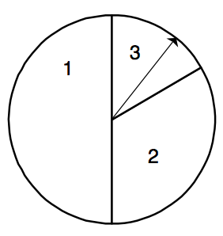
- Selecting a Coin from a Box
Suppose you select a coin from a box containing 3 nickels, 2 dimes and one quarter. Let \(X\) represent the value of the coin.
- Find the probability distribution of \(X\).
- Find the mean and standard deviation of \(X\).
- Suppose that your instructor will give you twice the value of the coin that you select, so your profit is \(Y = 2 X\). Make intelligent guesses at the mean and standard deviation of \(Y\).
- Check your guesses by actually computing the mean and standard deviation of \(Y\).
- This is an illustration of a general result. If \(X\) has mean \(\mu\) and standard deviation \(\sigma\)and \(Y = c X\) where \(c\) is a positive constant, then the mean of \(Y\) is equal to \(\underline{\hspace{2cm}}\) and the standard deviation of \(Y\) is equal to \(\underline{\hspace{2cm}}\).
- How Many Tries to Open the Door?
You have a ring with four keys, one of which will open your door. Suppose you try the keys in a random order until you open the door. Let \(X\) denote the number of wrong keys you try before you find the right one. It can be shown that \(X\) has the following distribution.
| (x) | (P(X = x)) |
|---|---|
| 0 | 1/4 |
| 1 | 1/4 |
| 2 | 1/4 |
| 3 | 1/4 |
- Find the mean and standard deviation of \(X\).
- Suppose you record instead \(Y\), the total number of keys you try. Note that \(Y = X + 1\). Find the probability distribution for \(Y\) and the mean and standard deviation.
- This is an illustration of a general result. If \(X\) has mean \(\mu\) and standard deviation \(\sigma\) and \(Y = X + c\) for some constant \(c\), then the mean of \(Y\) is equal to \(\underline{\hspace{2cm}}\) and the standard deviation of \(Y\) is equal to \(\underline{\hspace{2cm}}\).
- The Hat Check Problem
Consider the hat check problem described in Section 4.1. Consider the special case where \(n = 4\) men are checking their hats. If the names of the four men are represented by the initials \(A, B, C, D\), then you can represent the hats given to these four men by the arrangements \(ABCD, ABDC\), and so on.
- Write down the 24 possible arrangements and find the probability distribution for \(X\), the number of matches.
- Find the probability of no matches.
- Find the expected number of matches.
- Binomial Experiments
Is each random process described below a Binomial experiment? If it is, give values of \(n\) and \(p\). Otherwise, explain why it is not Binomial.
- Roll a die 20 times and count the number of sixes you roll.
- There is a room of 10 women and 10 men – you choose five people from the room without replacement and count the number of women you choose.
- Same process as part (b) but you sample with replacement instead of without replacement.
- You flip a coin repeatedly until you observe 3 heads.
- The spinner below is spun 50 times – you count the number of spins in the black region.
- Binomial and Negative Binomial Experiments
Each of the random processes below is a Binomial experiment, a Negative Binomial experiment, or neither. If the process is Binomial, give values of \(n\) and \(p\), and if the process is Negative Binomial, give values of \(r\) and \(p\).
- Suppose that 30% of students at a college regularly commute to school. You sample 15 students and record the number of commuters.
- Same scenario as part (a). You continue to sample students until you find two commuters and record the number of students sampled.
- Suppose that a restaurant offers apple and orange juice. From past experience, the restaurant knows that 30% of the breakfast customers order apple juice, 50% order orange juice, and 20% order no juice. One morning, the restaurant has 30 customers and the numbers ordering apple juice, orange juice, and no juice are recorded.
- Same scenario as part (c). The restaurant only records the number ordering orange juice out of the first 30 customers.
- Same scenario as part (c). The restaurant counts the number of customers that order breakfast until exactly three order apple juice.
- Same scenario as part (c). Suppose that from past experience, the restaurant knows that 40% of the breakfast bills will exceed $10. Of the first 30 breakfast bills, the number of bills exceeding $10 is observed.
- Shooting Free Throws
Suppose that Michael Jordan makes 80% of his free throws. Assume he takes 10 free shots during one game.
- What is the most likely number of shots he will make?
- Find the probability that he makes at least 8 shots.
- Find the probability he makes more than 5 shots.
- Purchasing Audio CDs
Suppose you know that 20% of the audio cd’s sold in China are defective. You travel to China and you purchase 20 cd’s on your trip.
- What is the probability that at least one cd in your purchase is defective?
- What is the probability that between 4 and 7 cd’s are defective?
- Compute the “average” number of defectives in your purchase.
- Rolling Five Dice
Suppose you roll five dice and count the number of 1’s you get.
- Find the probability you roll exactly two 1’s. Perform an exact calculation.
- Find the probability all the dice are 1’s. Perform an exact calculation.
- Find the probability you roll at least two 1’s. Perform an exact calculation.
- Choosing Socks from a Drawer
Suppose a drawer contains 10 socks, of which 4 are brown. We select 5 socks from the drawer with replacement.
- Find the probability two of the five selected are brown.
- Find the probability we choose more brown than non-brown.
- How many brown socks do we expect to select?
- Does the answer to part a change if we select socks from the drawer without replacement? Explain.
- Choosing Socks from a Drawer
Suppose that we select socks from the drawer with replacement until we see two that are brown.
- Find the probability that it takes us four selections.
- Find the probability it takes more than 2 selections.
- How many selections do we expect to make?
- Sampling Voters
In your local town, suppose that 60% of the residents are supportive of a school levy that will be on the ballot in the next election. You take a random sample of 15 residents.
- Find the probability that a majority of the sample support the levy.
- How many residents in the sample do you expect will support the levy?
- If you sample the residents one at a time, find the probability that it will take you five residents to find three that support the levy.
- Taking a True/False Test
Suppose you take a true/false test with twenty questions and you guess at the answers.
- Find the probability you pass the test assuming that passing is 60% or higher correct.
- Find the probability you get a \(B\) or higher where \(B\) is 80% correct.
- If you get an 80% on this test, is it reasonable to assume that you were guessing? Explain.
- Bernoulli Experiment
Let \(X_1\) denote the result of one Binomial trial, where \(X_1=1\) if you observe a success and \(X_1 = 0\) if you observe a failure. Find the mean and variance of \(X_1\).
- Rolling a Die
Suppose we roll a die until we observe a 6. This is a special case of a Negative Binomial experiment where \(r = 1\) and \(p\) = 1/6. When we are interested in the number of trials until the first success, this is a Geometric experiment and \(Y\) is a Geometric random variable.
- Find the probability that it takes you 4 rolls to get a 6.
- Find the probability that it takes you more than 2 rolls to get a 6.
- How many rolls do you need, on average, to get a 6?
- Heights of Male Freshmen
Suppose that one third of male freshmen entering a college are over 6 feet tall. Four men are randomly assigned to a dorm room. Let \(X\) denote the number of men in this room that are under 6 feet tall. You can ignore the fact that the actual sampling of men is done without replacement.
- Assuming \(X\) has a Binomial Distribution, what is a “success” and give values of \(n\) and \(p\).
- What is the most likely value of \(X\)? What is the probability of this value?
- Find the probability that at least three men in this room will be under 6 feet tall.
- Basketball Shooting
Suppose a basketball player is practicing shots from the free-throw line. She hasn’t been playing for a while and she becomes more skillful in making shots as she is practicing. Let \(X\) represent the number of shots she makes in 50 attempts. Explain why the Binomial distribution should not be used in finding probabilities about \(X\).
- Collecting Posters from Cereal Boxes
Suppose that a cereal box contains one of four posters and you are interested in collecting a complete set. You first purchase one box of cereal and find poster #1.
- Let \(X_2\) denote the number of boxes you need to purchase to find a different poster than #1. Find the expected value of \(X_2\).
- Once you have found your second poster, say #2, let \(X_3\) denote the number of boxes you need to find a different poster than #1 or #2. Find the expected value of \(X_3\).
- Once you have collected posters #1, #2, #3, let \(X_4\) denote the number of boxes you need to purchase to get poster #4. Find the expected value of \(X_4\).
- How many posters do you need, on average, to get a complete set of four?
- Baseball Hitting
In baseball, it is important for a batter to get “on-base” and batters are rated in terms of their on-base percentage. In the 2004 baseball season, Bobby Abreu of the Philadelphia Phillies had 705 “plate appearances” or opportunities to bat. Suppose we divide his plate appearances into groups of five – we record the number of times Abreu was on-base for plate appearances 1 through 5, for 6 through 10, for 11 through 15, and so on. If we let \(X\) denote the number of times on-base for five plate appearances, then we observe the following counts for \(X\):
| (x) | 0 | 1 | 2 | 3 | 4 | 5 | Total |
|---|---|---|---|---|---|---|---|
| Count | 10 | 29 | 44 | 40 | 15 | 3 | 141 |
To help understand this table, note that the count for \(X=1\) is 29 – this means there were 29 periods where Abreu was on-base exactly one time. The count for \(X=2\) is 44 – this means that for 44 periods Abreu was on-base two times.
Since each outcome is either a success or failure, where success is getting on-base, one wonders if the variation in these data can be explained by a Binomial distribution.
| (x) | 0 | 1 | 2 | 3 | 4 | 5 | TOTAL |
|---|---|---|---|---|---|---|---|
| (P(X = x)) | |||||||
| Expected | |||||||
| Count |
- Find the probabilities for a Binomial distribution with \(n = 5\) and \(p = 0.443\). This value of \(p\) is Abreu’s on-base rate for the entire 2004 baseball season. Place these probabilities in the \(P(X = x)\) row of the table.
- Multiply the probabilities you found in part (a) by 141, the number of periods in the 2004 season. Place these numbers in the Expected Count row of the table. These represent the expected number of times Abreu would have 0, 1, 2, .., 5 times on-base if the probabilities followed a Binomial distribution.
- Compare the expected counts with the actual observed counts in the first table. Does a Binomial distribution provide a good description of these data?
- Graphs of Binomial Distributions
Figure \(\ref{fig:hist2}\) shows the Binomial distributions with \(n = 20\) and \(p = 0.5\) (above) and \(n = 20\) and \(p = 0.2\) (below).
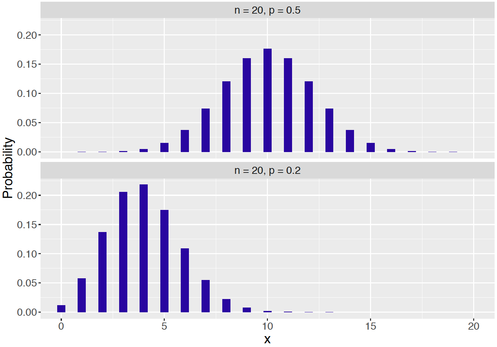
Recall in Section 4.4 that if a probability distribution is approximately bell-shaped, then approximately 68% of the probability falls within one standard deviation of the mean.
- For the Binomial distribution with \(n = 20\) and \(p = 0.5\), find the mean \(\mu\) and standard deviation \(\sigma\) and compute the interval (\(\mu - \sigma, \mu + \sigma)\).
- Find the exact probability that X falls in the interval (\(\mu - \sigma, \mu + \sigma)\).
- Repeat parts a and b for the Binomial distribution \(n = 20\) and \(p = 0.2\).
- For which distribution was the 68% rule more accurate? Does that make sense based on the shapes of the two distributions?
- Guessing on a Test
Students in a statistics class were given a five-question baseball trivia quiz. On each question, the students had to choose one of two possible answers. The number correct \(X\) was recorded for each student – a count table of the values of \(X\) are shown below.
| (X = x) | Count | (P(X = x)) | Expected |
|---|---|---|---|
| 0 | 0 | ||
| 1 | 3 | ||
| 2 | 4 | ||
| 3 | 7 | ||
| 4 | 6 | ||
| 5 | 1 |
- Suppose the students know little about baseball and so they are guessing on each question. If this is true, find the probability distribution of the number correct \(X\).
- Using this distribution, find the probability of each value of \(X\) and place these probabilities in the above table.
- By multiplying these probabilities by the number of students (21), find the expected number of students for each value of \(X\).
- Compare your expected counts with the actual counts – does a Binomial distribution seem like a reasonable assumption in this example?
- Playing Roulette
Suppose you play the game roulette 20 times. Each game, you place a Trio Bet on three numbers and you win with probability 3/38.
- Find the probability you win the game exactly two times.
- Find the probability that you are winless in the 20 games.
- Find the probability you win at least once.
- How many games do you expect to win?
- The Galton Board
Consider the Galton board described in Section 4.5. A ball is placed above the first peg and dropped. When it strikes a peg, it is equally likely to fall left or right. The location at the bottom \(X\) is equal to the number of times that the ball falls right.
- Explain why \(X\) has a Binomial distribution and give the values of \(n\) and \(p\).
- Find \(P(X = 2)\).
- Find the probability the ball falls to the right of the location “1”.
- Suppose that we change the experiment so that the probability of falling right is equal to 1/4. Explain how this changes the Binomial experiment and find \(P(X = 2).\)
- Drug Testing
In a New York Times article “Facing Questions, Rodriguez Raises More?” (February 21, 2008), Major League Baseball is said to have a drug-testing policy where 600 tests are randomly given to a group of 1200 professional ballplayers. Alex Rodriguez claimed one season that he received five random tests.
- If every player is equally likely to receive a single random blood test, what is the probability that Rodriguez gets tested?
- If \(X\) represents the number of tests administered to Rodriguez among the 600 test, then explain why \(X\) has a Binomial distribution and give the values of \(n\) and \(p\).
- Compute the probability that Rodriguez receives exactly one test.
- Recall Rodriguez’s claim that he received five random tests. Compute the probability of this event.
- You should find the probability computed in part (d) to be very small. If Rodriguez is indeed telling the truth, what do you think about the randomness of the drug-testing policy?
- Waiting at a ATM Machine
You are waiting at your local ATM machine and as usual, you are waiting in a line. Suppose you know that your waiting time can be between 0 to 5 minutes and any value between 0 and 5 minutes is equally likely.
- The graph below shows the density function for \(X\), the waiting time. What is the height of this function?
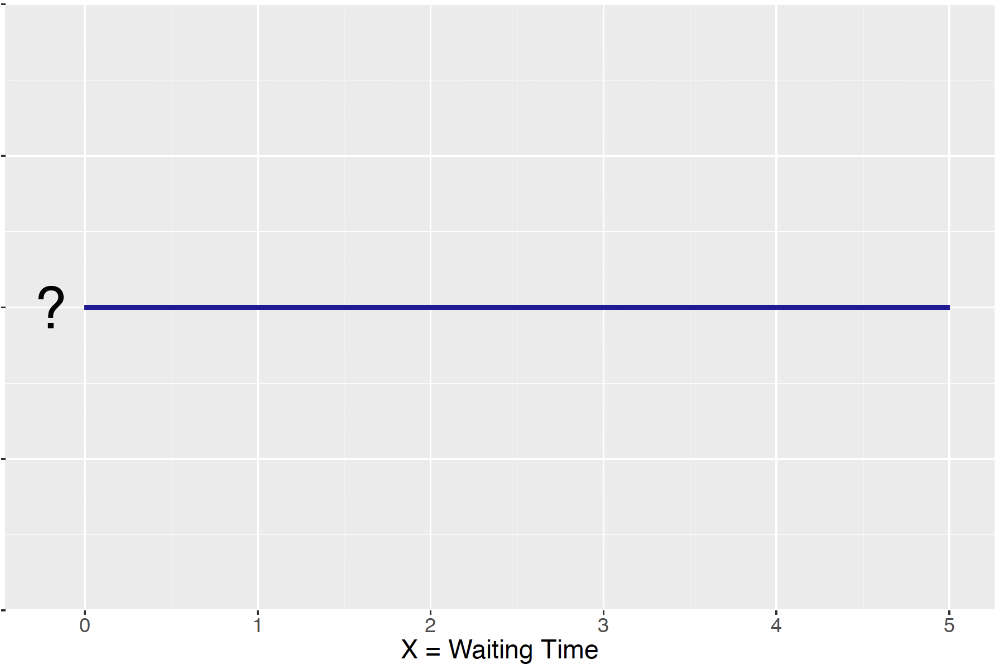
- Find the probability you wait more than 2 minutes.
- Find the probability you wait between 2 and 3 minutes.
- Morning Wake-Up
Suppose you wake up at a random time in the morning between 6 am and 12 pm.
- Find the probability you wake up before 11 am.
- Find the probability you wake up between 8 and 10 am.
- What is an “average” or typical time you will wake up? Explain how you computed this number.
- Find the standard deviation of the time.
- The Median Waiting Time
In the “waiting for a bus” example, suppose that you record the median time \(T\) (in minutes) that you wait for the bus on the three days. The density function for this median time is given by \[ f(t) = \frac{6 t (10 - t)}{1000}, \, \, 0 < t < 10. \]
- Draw a graph of this density function.
- Find the probability that the median time is between 5 and 7 minutes.
- Find the cdf \(F(t)\) for all values of \(t\).
- Using the cdf you found in part c, find the probability the median time is over 6 minutes.
- Find the 75% percentile of your median waiting time.
- The Sum of Two Spins
Suppose you spin two spinners, where the location of the arrow for each spinner is equally likely to fall between 0 and 10.
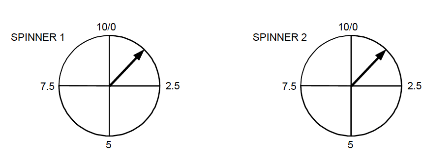
If you let \(S\) be the sum of the two spins, it can be shown that the density function of \(S\) is given by \[ f(s) = \begin{cases} s/100 , & 0 < s \le 10 \\ (20-s) / 100, & 10 < s \le 20, \\ \end{cases} \] and shown by the figure below.
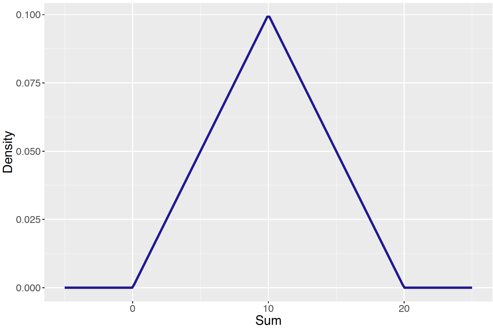
- Check that this function satisfies the two properties of a probability density function.
- Find the probability the sum of the two spins is smaller than 5.
- Find the cdf function \(F\).
- Using the cdf function, find the probability the sum of spins falls between 8 and 12.
- Using the cdf function, find the probability the sum of spins exceeds 12.
- Salaries for Professional Basketball Players
Let \(X\) denote the salary (in millions of dollars) of a professional basketball player. A reasonable density function for \(X\) is given by \[ f(x) = \frac{0.15}{x^{1.3}}, \, \, x \ge 0.1 \] shown by the figure below.
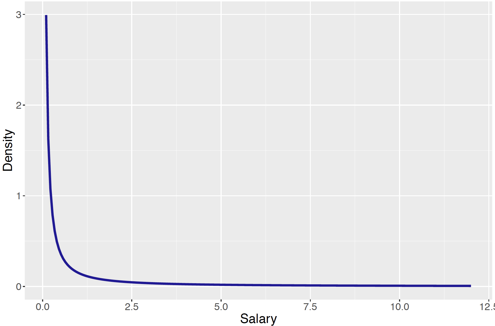
- What proportion of basketball players earn more than 1 million dollars?
- What proportion of players earn between 1 and 2 million dollars?
- Find the cdf function.
- Using the cdf function, find the probability a player earns less than one-half a million dollars.
- Find the “average” salary of a NBA player.
- Grading on a Curve
Suppose the grades on a math test are distributed according to the curve. \[ f(x) = \frac{x}{5000}, 0 < x < 100. \]
- Draw a graph of this density curve.
- Find the mean grade on this test.
- What proportion of students who take this test get a grade of 90 or higher?
- What proportion of students get a \(C\) grade, where \(C\) is defined to be between 70 and 80?
- Is this test harder or easier than the test grades in your statistics class? Explain.
- Time to Clean Your Room
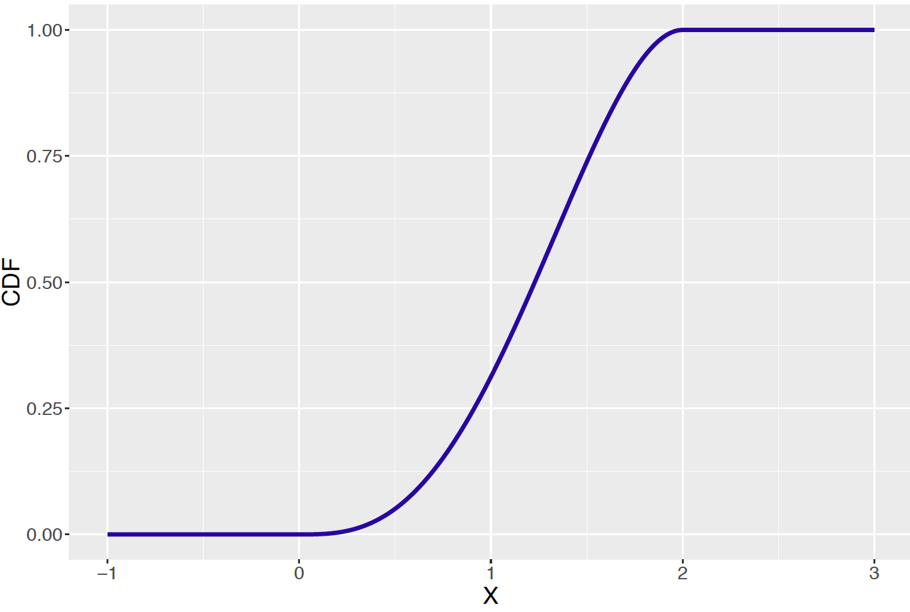
- Find the probability you can clean your room in under one hour.
- Find the probability it takes you over one and a half hour to clean your room?
- Using the graph, find a value \(M\) such that it is equally likely that \(X\) is smaller than \(M\) and \(X\) is larger than \(M\). [Hint: \(M\) is the 50th percentile of \(X\).]
- Time to Complete a Race
Suppose a group of children are running a race. The times (in minutes) that the children complete the race can be described by the density function \[ f(x) = \frac{4 + (x - 3)^2}{21}, 3 < x < 6. \]
- Graph this density function.
- Looking at your graph, is it more common to have a slow time (near 6 minutes) or a fast time (near 3 minutes)?
- Find the probability a child completes the race in under 4 minutes.
- Find the probability that a child’s time exceeds 5 1/2 minutes.
- Find the median running time.
- Spinning a Random Spinner
Suppose you flip a coin. If the coin lands heads, you spin a spinner that is equally likely to fall at any point in the interval (0, 4). If the coin lands tails, you spin a different spinner that lands at any point in the interval (2, 6). If \(X\) denotes your spin, the density function for \(X\) is graphed below.
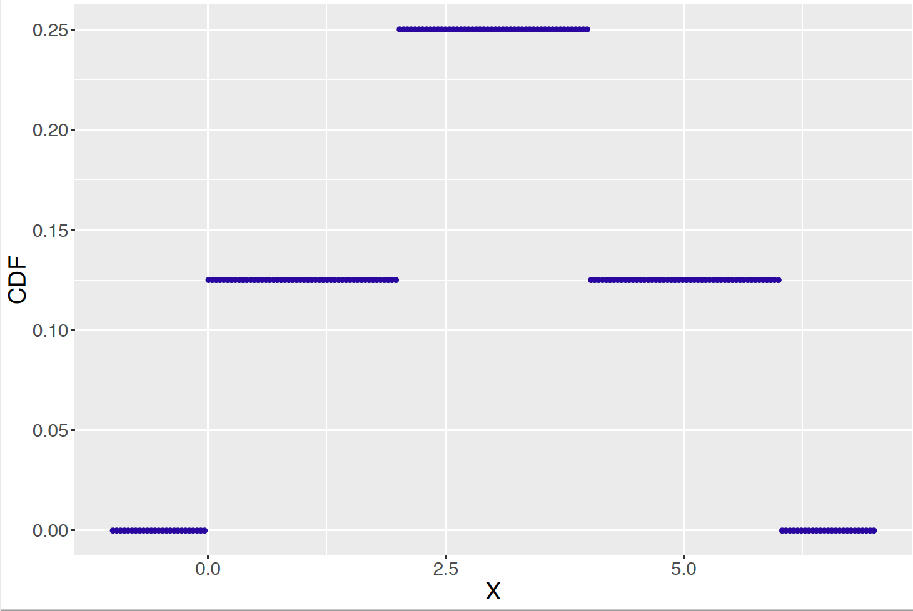
- Check that this graphed function is indeed a probability density.
- Find the probability that \(X\) is greater than 5.
- Find the probability that \(X\) falls between 1 and 3.
- Lifetimes of Light Bulbs
Suppose that a company is interested in the amount of time that a particular type of light bulb will last until it burns out. After sampling the lifetimes for a large group of light bulbs, it is decided that the lifetime \(X\) (in hours) is well-described by the exponential distribution of the form \[ f(x) = \frac{1}{100} e^{-x / 100}, x > 0. \] The cdf for \(X\) is drawn below.
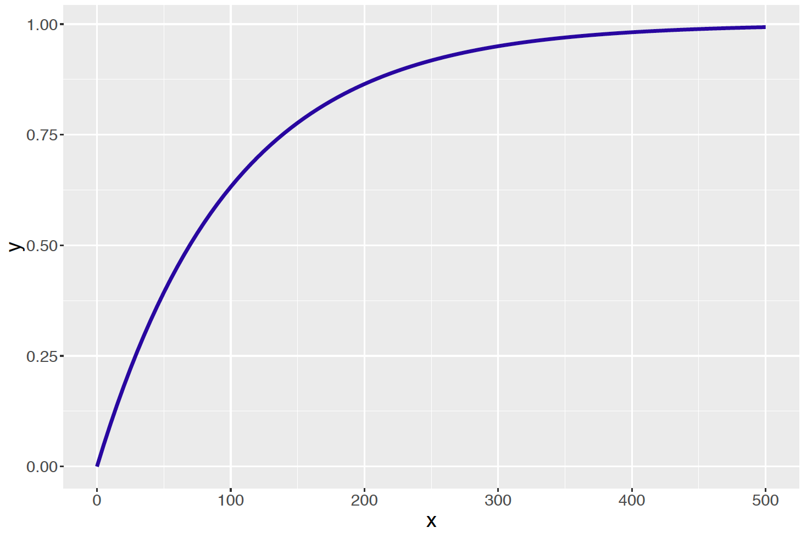
In addition, the cdf is computed for some values of \(X\) in the following table.
| (x) | (F(x)) | (x) | (F(x)) |
|---|---|---|---|
| 0 | 0 | 180 | 0.8347 |
| 30 | 0.2592 | 210 | 0.8775 |
| 60 | 0.4512 | 240 | 0.9093 |
| 90 | 0.5934 | 270 | 0.9328 |
| 120 | 0.6988 | 300 | 0.9502 |
| 150 | 0.7769 |
- Find the probability that a lifetime of a bulb will be less than 90 hours.
- Find the probability the lifetime is between 120 and 180 hours.
- From the table, approximate the median lifetime.
- Approximate the 95th percentile.
- Locations of Dart Throws
Suppose you throw a dart at a circular target such that the dart is equally likely to land in any location on the target. The locations for a large number of dart throws are shown in the figure below.
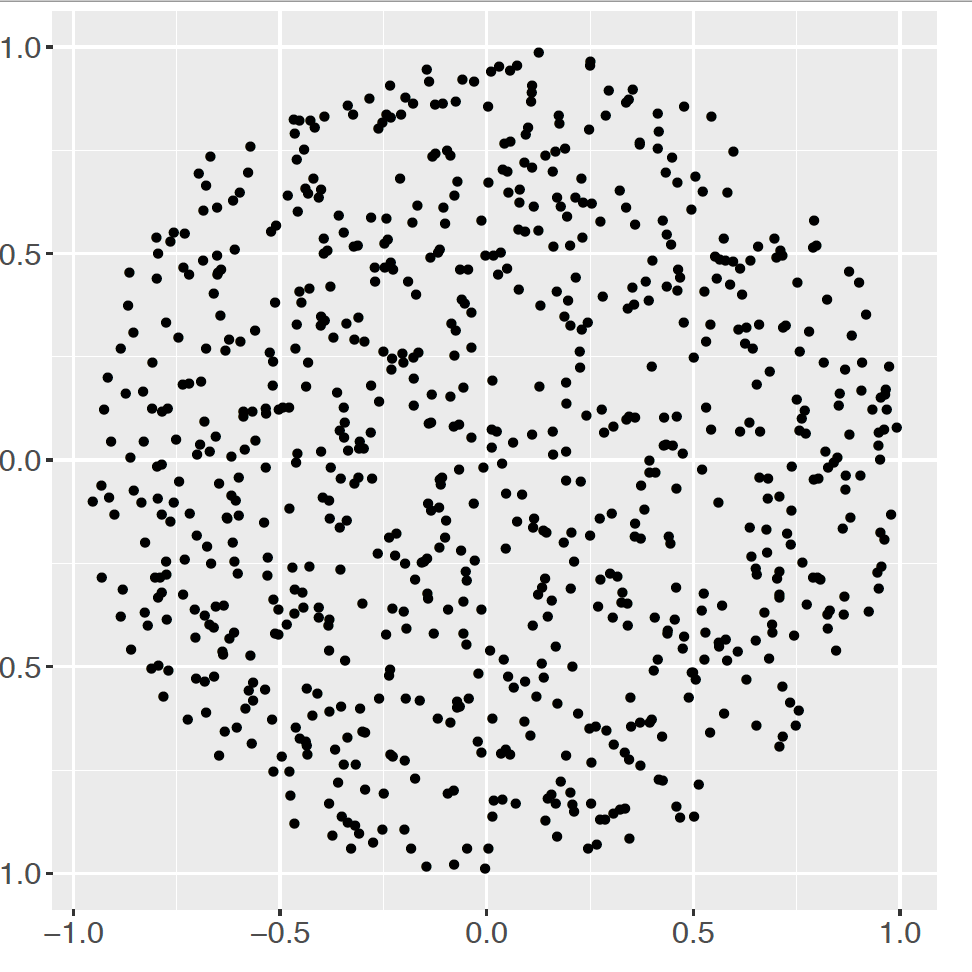
Let \(X\) denote the distance of a throw from the bulls eye. It can be shown that the density function of \(X\) has the form
\[
f(x) = \frac{x}{2}, 0 < x < 2.
\]
- Find the probability your throw lands within a distance of 1 unit from the target.
- Find the probability your throw lands between .5 and 1.5 units from the target.
- If you threw the dart many times at the target, find your average distance from the target.
- Heights of Men
Suppose heights of American men are approximately Normally distributed with mean 70 inches and standard deviation 4 inches.
- What proportion of men is between 68 and 74 inches?
- What proportion of men is taller than 6 feet?
- Find the 90th percentile of heights.
- Test Scores
Test scores in a precalculus test are approximately Normally distributed with mean 75 and standard deviation 10. If you choose a student at random from this class
- What is the probability he or she gets an \(A\) (over 90)?
- What is the probability he or she gets a \(C\) (between 70 and 80)?
- What is the letter grade of the lower quartile of the scores?
- Body Temperatures
The normal body temperature was measured for 130 subjects in an article published in the Journal of the American Medical Association. These body temperatures are approximately Normally distributed with mean \(\mu\) = 98.2 degrees and standard deviation \(\sigma\)= 0.73.
- Most people believe that the mean body temperature of healthy individuals is 98.6 degrees, but actually the mean body temperature is smaller than 98.6. What proportion of healthy individuals have body temperatures smaller than 98.6?
- Suppose a person has a body temperature of 96 degrees. What is the probability of having a temperature less than or equal to 96 degrees? Based on this computation, would you say that a temperature of 96 degrees is unusual? Why?
- Suppose that a doctor diagnoses a person as sick if his or her body temperature is above the 95th percentile of the temperature of “healthy” individuals. Find this body temperature that will give a sick diagnosis.
- Baseball Batting Averages
Batting averages of baseball players can be well approximated by a Normal curve. The figure below displays the batting averages of players during the 2003 baseball season with at least 300 at-bats (opportunities to hit). The mean and standard deviation of the matching Normal curve shown in the figure are \(\mu\) = 0.274 and \(\sigma\) = 0.027, respectively.
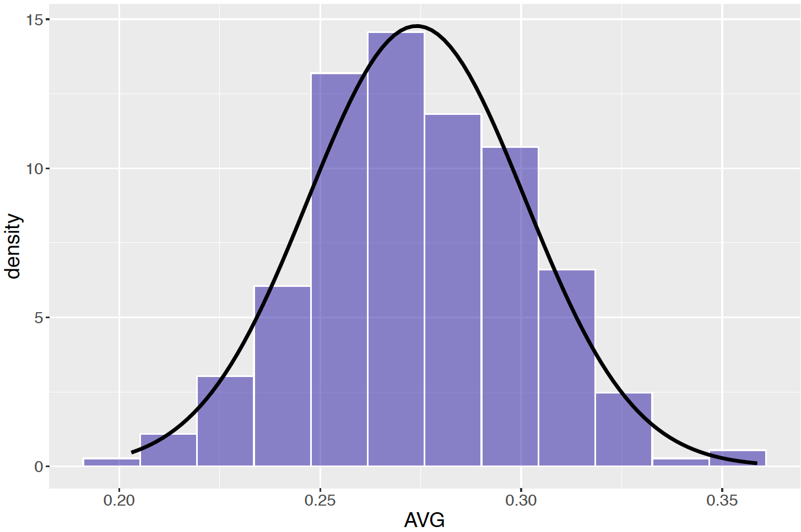
- If you choose a baseball player at random, find the probability his batting average is over 0.300. (This is a useful benchmark for a “good” batting average.)
- Find the probability this player has a batting average between 0.200 and 0.250.
- A baseball player is said to hit below the Mendoza line (named for weak-hitting baseball player Minnie Mendoza) if his batting average is under 0.200. Given our model, find the probability that a player hits below the Mendoza line.
- Suppose that a player has an incentive clause in his contract that states that he will earn an additional $1 million if his batting average is in the top 15%. How well does the player have to hit to get this additional salary?
- Emergency Calls
Suppose that the AAA reports that the average time it takes to respond to an emergency call on the highway is 25 minutes. Assume that the times to respond to emergency calls are approximately Normally distributed with mean 25 minutes and standard deviation 4 minutes.
- If your car gets stuck on a highway and you call the AAA for help, find the probability that it will take longer than 30 minutes to get help.
- Find the probability that you’ll wait between 20 and 30 minutes for help.
- Find a time such that you are 90% sure that the wait will be smaller than this number.
- Buying a Battery for your iPod
Suppose you need to buy a new battery for your iPod. Brand \(A\) lasts an average of 11 hours and Brand \(B\) lasts an average of 12 hours. You plan on using your iPod for eight hours on a trip and you want to choose the battery that is most likely to last 8 hours (that is, have a life that is least as long as 8 hours).
- Based on this information, can you decide which battery to purchase? Why or why not?
- Suppose that the battery lives for Brand \(A\) are Normally distributed with mean 11 hours and standard deviation 1.5 hours, and the battery lives for Brand \(B\) are Normally distributed with mean 12 hours and standard 2 hours. Compute the probability that each battery will last at least 8 hours.
- On the basis of this calculation in part (b), which battery should you purchase?
- Lengths of Pregnancies
It is known that the lengths of completed pregnancies are approximately Normally distributed with mean 266 days and standard deviation 16 days.
- What is the probability a pregnancy will last more than 270 days?
- Find an interval that will contain the middle 50% of the pregnancy lengths.
- Suppose a doctor wishes to tell a mother that he is 90% confident that the pregnancy will be shorter than \(x\) days. Find the value of \(x\).
- Attendances at Baseball Games
Attendance for home games of the Cleveland Indians for a recent baseball season can be approximated by a Normal curve with mean \(\mu\) = 24,667 and standard deviation \(\sigma\) = 6144.
Consider the attendance for one randomly selected game during the 2006 season.
- Find the probability the attendance exceeds 30,000.
- Find the probability the attendance is between 20,000 and 30,000.
- Suppose that the attendance at one game in the following season is 12,000. Based on the Normal curve, compute the probability that the attendance is at most 12,000. Based on this computation, is this attendance unusual? Why?
- Coin Flipping
Suppose you flip a fair coin 1000 times.
- How many heads do you expect to get?
- Find the probability that the number of heads is between 480 and 520.
- Suppose your friend gets 550 heads. What is the probability of getting at least 550 heads? Do you believe that your friend’s coin really was fair? Explain.
- Use of Online Banking Services
Suppose that a newspaper article claims that 80% of adults currently use online banking services. You wonder if the proportion of adults who use online banking services in your community, \(p\), is actually this large. You take a sample of 100 adults and 70 tell you they use online banking.
- If the newspaper article is accurate, find the probability that 70 or fewer of your sample would use on-line banking.
- Based on your computation, is there sufficient evidence to suggest that less than 80% of your community use online banking services? Explain.
- Time to Complete a Race
Suppose a group of children are running a race. The times (in minutes) that the children complete the race can be described by the density function \[ f(x) = \frac{4+ ( x-3)^2}{21}, 3 < x < 6. \] A graph of this density is shown below. The mean and standard deviation of this density are given by 4.83 and 0.84 minutes, respectively.
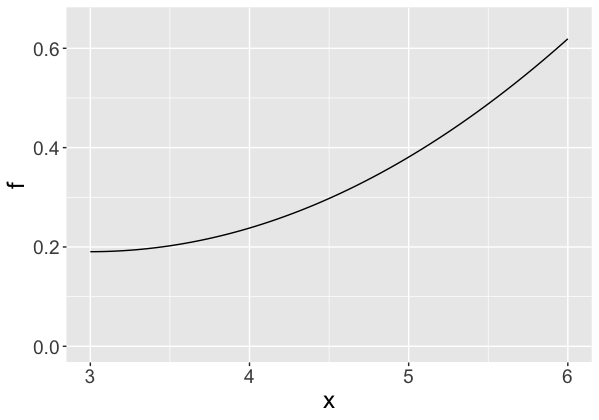
- Suppose 25 students run this race and you find the mean completion time. Find the probability that the mean time exceeds 5 minutes.
- Find an interval that you are 90% confident contains the mean completion time for the 25 students.
- Snowfall Accumulation
Your local meteorologist has collected data on snowfall for the past 100 years. Based on these data, you are told that the amount of snowfall in January is approximately Normally distributed with mean 15 inches and standard deviation 4 inches.
- Find the probability you get more than 20 inches of snow this year.
- In the next ten years, find the probability that the average snowfall (for these ten years) will exceed 20 inches.
- Total Waiting Time at a Bank
You are waiting to be served at your bank. From past experience, you know that your time to be served has a Uniform distribution between 0 and 10 minutes.
- Find the mean and standard deviation of your waiting time.
- The Central Limit Theorem can be also stated in terms of the sum of random variables. If the random variables \(X_1, ..., X_n\) represent a random sample drawn from a population with mean \(\mu\) and standard deviation \(\sigma\), then the sum of random variables \(S = \sum_{i=1}^n X_i\), for large sample size \(n\), will be approximately Normally distributed with mean \(n \mu\) and standard deviation \(\sqrt{n} \sigma\) . Suppose you wait at the bank for 30 days. Use this version of the Central Limit Theorem to find the probability that your total waiting time will exceed three hours.
- Total Errors in Check Recording
Suppose you record the amount of a written check to the nearest dollar. It is reasonable to assume that the error between the actual check amount and the written amount has a Uniform distribution between \(-0.50\) and \(+0.50\).
- Find the mean and standard deviation of one error.
- Suppose you write 100 checks in a single month and \(S\) denotes the total error in recording these checks. Find the probability that \(S\) is smaller than $5. (Use the version of the Central Limit Theorem described in Exercise 5.)
- Find an interval of the form \((-c, c)\) so that \(P(-c < S < c) = 0.95\).
- Distribution of Measurements
Suppose that a group of measurements is approximately Normally distributed with mean \(\mu\) and standard deviation \(\sigma\).
- Find the probability that a measurement falls within one standard deviation of the mean.
- Is it likely that you collect a measurement that is larger than \(\mu +3 \sigma\) ? Explain.
- Find an interval that contains the middle 50% of the measurements.
- Salaries of Professional Football Players
Suppose you learn that the mean salary of all professional football players this season is 7 million dollars with a standard deviation of 2 million dollars.
- Do you believe that the distribution of salaries is approximately Normally distributed? If your answer is no, sketch a plausible distribution for the salaries.
- From your graph, find an approximate probability that a salary is smaller than $6 million.
- Suppose you take a random sample of 30 salaries. Find the probability that the mean salary for this sample is smaller than $6 million.
- Weights of Candies
In the candy bowl example, the probability distribution of the candy weight \(X\) is given in the following table.
Table 5.1. Weight and proportion of 5 types of candies.
| (x) | (P(X = x)) | |
|---|---|---|
| fruity square | 2 | 0.15 |
| milk maid | 5 | 0.35 |
| jelly nougat | 8 | 0.20 |
| caramel | 14 | 0.15 |
| candy bars | 18 | 0.15 |
Verify by calculation that the mean and standard deviation of \(X\) are given by \(\mu\) = 8.4500 and \(\sigma\) = 5.3617, respectively.
- Sleeping Times
Suppose sleeping times of college students are approximately Normally distributed. You are told that 25% of students sleep less than 6.5 hours and 25% of students sleep longer than 8 hours. Given this information, determine the mean and standard deviation of the Normal distribution.
- Coin Flips
Suppose you flip a coin three times with eight equally likely outcomes \(HHH, HHT, ..., TTT\). Let \(X\) denote the number of heads in the first two flips and \(Y\) the number of heads in the last two flips.
- Find the joint probability mass function (pmf) of \(X\) and \(Y\) and put your answers in the following table.
| y | |||
|---|---|---|---|
| (x) | 0 | 1 | 2 |
| 0 | |||
| 1 | |||
| 2 |
- Find \(P(X > Y)\).
- Find the marginal pmf’s of \(X\) and \(Y\).
- Find the conditional pmf of \(X\) given \(Y = 1\).
- Selecting Numbers
Suppose you select two numbers without replacement from the set {1, 2, 3, 4, 5}. Let \(X\) denote the smaller of the two numbers and \(Y\) denote the larger of the two numbers.
- Find the joint probability mass function of \(X\) and \(Y\).
- Find the marginal pmf’s of \(X\) and \(Y\).
- Are \(X\) and \(Y\) independent? If not, explain why.
- Find \(P(Y = 3 \mid X = 2)\).
- Die Rolls
You roll a die 4 times and record \(O\), the number of ones, and \(T\) the number of twos rolled.
- Construct the joint pmf of \(O\) and \(T\).
- Find the probability \(P(O = T)\).
- Find the conditional pmf of \(T\) given \(O = 1\).
- Compute \(P(T > 0 \mid O = 1)\).
- Choosing Balls
Suppose you have a box with 3 red and 2 black balls. You first roll a die – if the roll is 1, 2, you sample 3 balls without replacement from the box. If you roll is 3 or higher, you sample 2 balls without replacement from the box. Let \(X\) denote the number of balls you sample and \(Y\) the number of red balls selected.
- Find the joint pmf of \(X\) and \(Y\).
- Find the probability \(P(X = Y)\).
- Find the marginal pmf of \(Y\).
- Find the conditional pmf of \(X\) given \(Y = 2\).
- Baseball Hitting
Suppose a player is equally likely to have 4, 5, or 6 at-bats (opportunities) in a baseball game. If \(N\) is the number of opportunities, then assume that \(X\), the number of hits, is Binomial with probability \(p = 0.3\) and sample size \(N\).
- Find the joint pmf of \(N\) and \(X\).
- Find the marginal pmf of \(X\).
- Find the conditional pmf of \(N\) given \(X = 2\).
- If the player gets 3 hits, what is the probability he had exactly 5 at-bats?
- Multinomial Density
Suppose a box contains 4 red, 3 black, and 3 green balls. You sample eight balls with replacement from the box and let \(R\) denote the number of red and \(B\) the number of black balls selected.
- Explain why this is a Multinomial experiment and given values of the parameters of the Multinomial distribution for \((R, B)\).
- Compute \(P(R = 3, B = 2)\).
- Compute the probability that you sample more red balls than black balls.
- Find the marginal distribution of \(B\).
- If you are given that you sampled \(B = 4\) balls, find the probability that you sampled at most 2 red balls.
- Joint Density
Let \(X\) and \(Y\) have the joint density \[ f(x, y) = k y, \, \, 0 < x < 2, 0 < y < 2. \]
- Find the value of \(k\) so that \(f()\) is a pdf.
- Find the marginal density of \(X\).
- FInd \(P(Y > X)\).
- Find the conditional density of \(Y\) given \(X = x\) for any value \(0 < x < 2\).
- Joint Density
Let \(X\) and \(Y\) have the joint density \[ f(x, y) = x + y, \, \, 0 < x < 1, 0 < y < 1. \]
- Check that \(f\) is indeed a valid pdf. If it is not, correct the definition of \(f\) so it is valid.
- Find the probability \(P(X > 0.5, Y < 0.5)\).
- Find the marginal density of \(X\).
- Are \(X\) and \(Y\) independent? Answer by a suitable calculation.
- Random Division
Suppose one randomly chooses a values \(X\) on the interval (0, 2), and then random choosing a second point \(Y\) from 0 to \(X\).
- Find the joint density of \(X\) and \(Y\).
- Are \(X\) and \(Y\) independent? Explain.
- Find the probability \(P(Y > 0.5)\).
- Find the probability \(P(X + Y > 2)\).
- Choosing a Random Point in a Circle
Suppose (\(X, Y\)) denotes a random point selected over the unit circle. The joint pdf of (\(X, Y\)) is given by \[ f(x, y) = \begin{cases} C, \, \, x^2 + y^2 \le 1;\\ 0, \, \,{\rm elsewhere}. \end{cases} \]
- Find the value of the constant \(C\) so \(f()\) is indeed a joint pdf.
- Find the marginal pdf of \(Y\).
- Find the probability \(P(Y > 0.5)\)
- Find the conditional pdf of \(X\) conditional on \(Y = 0.5\).
- A Random Meeting
Suppose John and Jill independently arrive at an airport at a random between 3 and 4 pm one afternoon. Let \(X\) and \(Y\) denote respectively the number of minutes past 3 pm that John and Jill arrive.
- Find the joint pdf of \(X\) and \(Y\).
- Find the probability that John arrives later than Jill.
- Find the probability that John and Jill meet within 10 minutes of each other.
- Defects in Fabric
Suppose the number of defects per yard in a fabric \(X\) is assumed to have a Poisson distribution with mean \(\lambda\). That is, the conditional density of \(X\) given \(\lambda\) has the form \[ f(x \mid \lambda) = \frac{e^{-\lambda} \lambda^x}{x!}, x = 0, 1, 2, ... \] The parameter \(\lambda\) is assumed to be uniformly distributed over the values 0.5, 1, 1.5, and 2.
- Write down the joint pmf of \(X\) and \(\lambda\).
- Find the probability that the number of defects \(X\) is equal to 0.
- Find the conditional pmf of \(\lambda\) if you know that \(X = 0\).
- Defects in Fabric (continued)
Again we assume the number of defects per yard in a fabric \(X\) given \(\lambda\) has a Poisson distribution with mean \(\lambda\). But now we assume \(\lambda\) is continuous-valued with the exponential density \[ g(\lambda) = \exp(-\lambda), \, \, \lambda > 0. \]
Write down the joint density of \(X\) and \(\lambda\).
Find the marginal density of \(X\). [Hint: it may be helpful to use the integral identity \[ \int_0^\infty \exp(-a \lambda) \lambda^b d\lambda = \frac{b!}{a ^ {b + 1}}, \] where \(b\) is a nonnegative integer.]
Find the probability that the number of defects \(X\) is equal to 0.
Find the conditional density of \(\lambda\) if you know that \(X = 0\).
- Flipping a Random Coin
Suppose you plan flipping a coin twice where the probability \(p\) of heads has the density function \[ f(p) = 6 p (1 - p), \, \, 0 < p < 1. \] Let \(Y\) denote the number of heads of this “random” coin. \(Y\) given a value of \(p\) is Binomial with \(n = 2\) and probability of success \(p\).
- Write down the joint density of \(Y\) and \(p\).
- Find \(P(Y = 2)\).
- If \(Y = 2\), then find the probability that \(p\) is greater than 0.5.
- Passengers on An Airport Limousine
An airport limousine can accommodate up to four passengers on any one trip. The company will accept a maximum of six reservations for a trip, and a passenger must have a reservation. From previous records, \(30\%\) of all those making reservations do not appear for the trip. Answer the following questions, assuming independence whenever appropriate.
If six reservations are made, what is the probability that at least one individual with a reservation cannot be accommodated on the trip?
If six reservations are made, what is the expected number of available places when the limousine departs?
Suppose the probability distribution of the number of reservations made is given in the following table.
| Number of observations | 3 | 4 | 5 | 6 |
|---|---|---|---|---|
| Probability | 0.13 | 0.18 | 0.35 | 0.34 |
Let \(X\) denote the number of passengers on a randomly selected trip. Obtain the probability mass function of \(X\).
| (x) | 0 | 1 | 2 | 3 | 4 |
|---|---|---|---|---|---|
| (p(x)) |
- Heights of Fathers and Sons
It is well-know that heights of fathers and sons are positively association. In fact, if \(X\) represents the father’s height in inches and \(Y\) represents the son’s height, then the joint distribution of \((X, Y)\) can be approximated by a Bivariate Normal with means \(\mu_X = \mu_Y = 69\), \(\sigma_X = \sigma_Y = 3\) and correlation \(\rho = 0.4\).
- Are \(X\) and \(Y\) independent? Why or why not?
- Find the conditional density of the sons height if you know the father’s height is 70 inches.
- Using the result in part (b) to find \(P(Y > 72 \mid X = 70)\).
- By simulating from the Bivariate Normal distribution, approximate the probability that the son will be more than one inch taller than his father.
- Instruction and Students’ Scores
Twenty-two children are given a reading comprehension test before and after receiving a particular instruction method. Assume students’ pre-instructional and post-instructional scores follow a Bivariate Normal distribution with: \(\mu_{pre} = 47, \mu_{post} = 53, \sigma_{pre} = 13, \sigma_{post} = 15\) and \(\rho = 0.7\).
Find the probability that a student’s post-instructional score exceeds 60.
Suppose one student’s pre-instructional score is 45, find the probability that this student’s post-instructional score exceeds 70.
Find the probability that a student has increased the test score by at least 10 points. [Hint: Use R to simulate a large number of draws from the Bivariate Normal distribution. Refer to the example function in Section 6.7 for simulating Bivariate Normal draws.]
- Shooting Free Throws
Suppose a basketball player will take \(N\) free throw shots during a game where \(N\) has the following discrete distribution.
| (N) | 5 | 6 | 7 | 8 | 9 | 10 |
|---|---|---|---|---|---|---|
| Probability | 0.2 | 0.2 | 0.2 | 0.2 | 0.1 | 0.1 |
If the player takes \(N = n\) shots, then the number of makes \(Y\) is Binomial with sample size \(n\) and probability of success \(p = 0.7\).
Find the probability the player takes 6 shots and makes 4 of them.
From the joint distribution of \((N, Y)\), find the most likely \((n, y)\) pair.
Find the conditional distribution of the number of shots \(N\) if he makes 4 shots.
Find the expectation \(E(N \mid Y = 4)\).
- Flipping a Random Coin
Suppose one selects a probability \(p\) Uniformly from the interval (0, 1), and then flips a coin 10 times, where the probability of heads is the probability \(p\). Let \(X\) denote the observed number of heads.
Find the joint distribution of \(p\) and \(X\).
Use R to simulate a sample of size 1000 from the joint distribution of \((p, X)\).
From inspecting a histogram of the simulated values of \(X\), guess at the marginal distribution of \(X\).